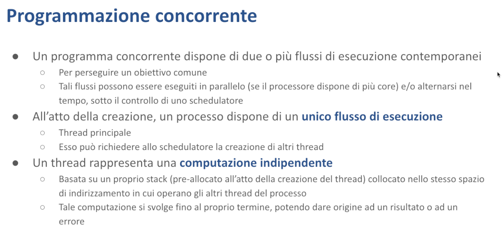

Concorrenza - Malnati 22-25
Indice
- 1. Introduzione
- 2. Thread in Rust
- 3. Mutex in Rust
- 4. ConditionVariable in Rust
- 5. Canali in Rust
- 6. Riferimenti
1. Introduzione

La programmazione concorrente di base si occupa di permetterci la gestione nel contesto dello stesso processo di più attività una fianco all'altra. Notate che di per sé il concetto di concorrenza esiste nei sistemi operativi da tantissimo tempo: un sistema operativo si occupa di permettere a una singola CPU di poter eseguire molti processi separati, indipendentemente l'uno dall'altro.
E' diventata significativa negli anni 90 nel momento in cui i sistemi operativi hanno reso disponibile l'accesso al proprio scheduler permettendo la creazione, nel contesto dello stesso processo, di più thread. Fino agli anni 90 la concorrenza veniva realizzata grazie al fatto che esistevano processi che giravano sulla macchina che potevano svolgersi sì in parallelo, ma siccome erano isolati l'uno dall'altro non si impicciavano.
Dando invece la possibilità nel contesto di uno stesso processo (e quindi di uno stesso spazio di indirizzamento) di poter creare più thread, ciascuno dei quali governa il proprio flusso di esecuzione, da un lato si è dischiuso un uso più efficace del potenziale parallelismo contenuto all'interno del nostro codice, dall'altro si sono aperti una serie di problemi che ora vogliamo sviscerare bene.
Quindi un programma concorrente è quello che contiene al suo interno due o più flussi di esecuzione. Notate che quando viene creato un processo il sistema operativo automaticamente crea il flusso di esecuzione primario, quello che noi normalmente facciamo partire dal main. In realtà sappiamo che parte da prima, ma fa lo stesso. Di base quello è l'unico flusso presente all'interno del processo a meno che noi in modo esplicito non chiediamo di attivarne degli altri.
Come lo chiediamo?
Dipende… Dipende dal sistema operativo, e dipende dal linguaggio. Fino ad alcuni anni fa non esisteva un modo normalizzato, nei linguaggi di basso livello, di creare thread alternativi. Occorreva ricorrere esplicitamente alle system call offerte dal sistema operativo. Nel caso di Unix o dei sistemi diciamo POSIX like, questo equivaleva a invocare la funzione pthread_create, nel caso di Windows questo equivaleva a chiamare l'API chiamata CreateThread e altri... Chiaramente questo poneva un problema perché realizzare dei programmi in multipiattaforma diventava più complesso.
Quando chiediamo di attivare un thread all'interno di un processo esistente, quello che succede è che il sistema operativo, nello spazio di indirizzamento del processo, riserva una nuova zona di memoria, grande di solito un megabyte, ma comunque dimensionabile, per poter contenere lo stack di questo nuovo thread. Perché ad ogni thread creato all'interno di un processo viene associato uno stack.
Quindi se è vero che fino adesso noi abbiamo considerato i nostri processi come dotati di uno spazio di memoria all'interno delle quali c'è uno stack e un heap, nel momento in cui attiviamo più thread, lo heap rimane sempre uno solo, condiviso da tutti. Di stack ce ne sono tanti quanti sono i thread che abbiamo attivato. Il thread che noi attiviamo non solo ha uno stack, ma ha associata anche una computazione, ovvero per poter creare un thread occorre specificare una funzione che ne rappresenta la computazione.
Di fatto il thread comincia a invocare questa funzione, procede, fa tutto quello che c'è scritto all'interno, fino a quando questa funzione non ritorna. Nel momento in cui la funzione ritorna il thread viene chiuso e cessa di esistere. In base al sistema operativo la funzione invocata dal thread può ritornare o meno un valore.
In generale i linguaggi moderni che espongono il concetto di thread lo fanno nascondendo completamente la funzione specifica del sistema operativo e ci danno astrazioni diverse. In alcuni casi ci danno delle astrazioni per cui il thread non ritorna niente, è il caso di Java. In Java voi potete creare un thread, e l'oggetto thread è determinato da un oggetto che implementa l'interfaccia Runnable, che è un'interfaccia molto semplice, ha un unico metodo, public void run. Non ha argomenti, non ha tipo di ritorno, è void. Di conseguenza quel thread lì esegue, fa qualcosa, tutt'al più vedrò degli effetti collaterali, niente altro.
In altri casi, viceversa, altri linguaggi, C++ piuttosto che Rust, ci offrono la possibilità di ritornare un valore. Quel valore lì viene conservato fino a che qualcuno non lo va a leggere.

Notate che i dettagli di quello che succede sono completamente mediati dal sistema operativo. Quindi la libreria di supporto, in cooperazione con il sistema operativo, si occupa, all'atto della richiesta di creazione di un thread, di:
- allocare uno stack grande quanto serve nel nostro spazio di indirizzamento
- preparare delle strutture lato kernel all'interno delle quali sia possibile conoscere lo stato della computazione del thread stesso
Dopodiché il thread verrà, la rappresentazione che il sistema operativo dà del thread al proprio interno verrà resa disponibile allo scheduler che provvederà ad allocare a questo thread la CPU, mettendolo insieme a tutte le altre attività che il sistema operativo deve svolgere.
Notate che alcuni linguaggi ci danno l'accesso diretto ai thread così come li fa il sistema operativo e in questo caso parliamo di supporto con thread nativi. In altri casi viceversa, la creazione di thread può essere mediata da uno strato di runtime offerto dal linguaggio stesso. E' quello che sta succedendo in questo momento con Java a partire dalla versione 21, che mette a disposizione oltre che i thread nativi anche i cosiddetti green thread. Questo è reso possibile dal fatto che nel runtime di Java si è scelto di implementare un proprio scheduler che agisce on top dello scheduler del sistema operativo. E nel fare questa scelta hanno pensato che questo potesse portare dei benefici sulla scalabilità in grande delle applicazioni.
In questo secondo caso, quando cioè viene adottato uno scheduler intermedio che si pone on top dello scheduler del sistema operativo, genericamente chiamiamo il sistema di threading green thread o in alcuni casi fibers o fibre.
Di base, sia C++ che Rust ci danno direttamente l'accesso ai thread nativi, ma ci danno anche la possibilità mediante librerie di terze parti di creare degli scheduler intermedi e quindi di implementare le astrazioni dei green thread.
Noi ci occuperemo in questo momento dei thread nativi, che sono quelli di base che la piattaforma sottostante ci garantisce. E ci concentreremo sulle tre piattaforme significative che sono quelle di Windows e il mondo Unix in generale, che in questo caso è rappresentato dall'astrazione chiamata POSIX.
1.1 Thread nativi

Tipicamente, ciascun sistema operativo a modo proprio ci offre tre funzioni fondamentali, che sono:
- Crea un nuovo thread
- Identifica ciascun thread in un modo univoco Il modo con cui lo identifico può essere tramite una handle opaca e/o tramite un ID esplicito (thread numero 27, thread numero 54…). Le due cose sono in corrispondenza biunivoca: l'ID è univoco a livello di sistema operativo, quindi se in un processo ho un thread che si chiama 27, quel thread si chiama 27 e non c'è nessun altro thread che si chiama 27 in nessun altro processo che sta girando in questo momento. E normalmente è associato anche a una handle in modo biunivoco.
- Join
L’operazione join è un'operazione che dice “io ho creato questo thread che deve fare delle sue cose, adesso io mi fermo finché lui non ha finito”. Eventualmente posso avere accesso, a secondo di come wrappo questa operazione, a uno stato finale di quel thread, il valore che mi ritorna, oppure non avercelo. Nel caso di Java non ce l'ho, join mi blocca e basta, viceversa in altri linguaggi ho la possibilità facendo l'operazione join di, quando il thread è finito, recuperare quale valore mi ha restituito.
Queste sono le operazioni che in modo differente, ma concettualmente simile, fanno tutti i sistemi operativi. In modo differente vuol dire che sono tanti diversi i parametri che devo passare. Nel caso di Windows abbiamo due funzioni essenziali che mi creano, CreateThread semplice o CreateThreadEx, che differiscono nella quantità di parametri, richiedono come minimo l'indicazione della funzione da invocare, CreateThread anche la dimensione dello stack e qualcos'altro, la definizione del contesto di sicurezza e così via.
Nel caso di POSIX tendenzialmente la pthread_create mi chiede altri parametri che contengono anche lì in qualche modo l'indicazione della funzione da chiamare eccetera, però l'ordine e la sintassi è differente.
I linguaggi moderni nascondono tutto questo, liberandoci dal problema di sapere il dettaglio di cosa il sistema operativo fa. Quello che i sistemi operativi non fanno, nel modo più assoluto, è darci un modo di cancellare un thread. Perché non c'è? Perché in realtà quando si è provato a mettere qualcosa ci si è resi conto che si facevano dei danni galattici.
La cancellazione è possibile solo in un processo cooperativo, ovvero io chiedo in qualche modo (poi vedremo come) al thread di piantarla lì e quando lui ha voglia la pianta lì. L'alternativa è uccidere tutto il processo. Quello lo posso fare. Uccidendo il processo distruggo tutti i thread che stanno dentro e di conseguenza libero lo spazio di indirizzamento e così via.
Un tentativo di implementare la terminazione forzata dei thread è stato fatto nella prima versione di Java, Java 1.0, che aveva introdotto i thread multipiattaforma. All'oggetto Thread, oltre al metodo start per l'avvio, era stato aggiunto il metodo stop per bloccare l'esecuzione. Tuttavia, il metodo stop si è rivelato disastroso: potendo intervenire in modo asincrono e casuale, interrompeva il thread bruscamente in qualsiasi punto dell'esecuzione, lasciando strutture dati in uno stato inconsistente e impossibile da ricostruire. È come se qualcuno venisse colpito all'improvviso: tutto ciò che stava facendo rimane incompiuto, e gli altri thread non hanno modo di capire cosa sia stato completato e cosa no, creando una situazione ingestibile.
Di conseguenza ai thread si può in qualche modo dire "per favore fermati" e quando lui si accorge che gli avete chiesto "fermati" e decide che ci sono le condizioni per fermarsi, allora si ferma. Però è fondamentale: è un atteggiamento cooperativo.
1.2 Cosa implica la concorrenza

Di per sé il concetto di concorrenza è tutto qua. Quindi, abbiamo creato la capacità di eseguire più cose in parallelo nello stesso spazio di indirizzamento.
Uno potrebbe chiedersi "e dove sta la difficoltà?". Potrebbe anche chiedersi "qual è il beneficio di questa cosa?"
Allora i benefici sono tanti. Prima di tutto la possibilità di fare cose contemporaneamente. Contemporaneamente perché spesso i nostri programmi si trovano a dover fare ad esempio alcune operazioni che riguardano la I/O.
Ad esempio, io scrivo a un certo punto sul disco. Come avviene la scrittura sul disco? Beh, la scrittura sul disco avviene che io preparo le cose che voglio scrivere, poi le metto in un buffer, poi dico al sistema operativo "trasferiscili nel disco". Il sistema operativo, con i meccanismi suoi — usando il DMA, o non usandolo, non ha importanza — trasferisce.
Il problema è che io devo sapere quando quel buffer lo posso riusare. Quindi l'operazione write, che accetta il buffer da scrivere, mi blocca fino a che il sistema operativo non è finito.
Quanto ci mette l'operazione write?
Dipende… dipende da che disco avete (un disco rotativo, un disco allo stato solito etc…).
Ci può mettere decine di migliaia di cicli macchina, a volte centinaia di migliaia di cicli macchina, che sono millisecondi. Millisecondi, nell'esperienza di un computer, sono mesi nell'esperienza umana. Di conseguenza, in quei millisecondi io sono fermo in attesa che il sistema operativo faccia. Potrei fare altre cose? Ovviamente sì.
E allora l'idea è che, mentre un thread è bloccato in un'operazione di I/O, ne posso avere un altro che fa delle cose utili. Quindi arrivo a sovrapporre temporalmente delle cose. Potrei ottenere in parte questo beneficio se creassi due processi.
Certo, tutto il mondo Unix vecchia maniera, 1970-1980, era pensato proprio sull'idea di creare molti processi. Alla base di Unix c'è la System Call che si chiama fork, che vi permette di duplicare un processo col suo stato di esecuzione. E quindi io posso affidare a un altro processo il compito di fare un certo mestiere. Ma se poi quest'altro processo deve ritornarmi dei dati, è complicato, perchè è completamente separato. È vero che la partenza è condivisa, ma l'arrivo invece è separato. E quell'altro processo deve poi mandarmi indietro delle cose, e lo deve fare con dei sistemi di Inter-Process Communication, che costano tantissimo.
Viceversa, col mondo dei thread, siccome operiamo nello stesso spazio di indirizzamento, io posso dire a un thread "scrivi qui il tuo risultato, quando tu avrai finito vengo a leggere e quello che hai trovato lo leggo: lo trovo lì, facile". Cioè gli passo l'indirizzo di dove lui deve mettere i suoi risultati e poi lo andrò a vedere. Quindi non ho nessun overhead di Inter-Process Communication.

Posso, se la mia CPU è multi-core, veramente eseguire più operazioni in completo parallelo. Mentre un core svolge un compito, un altro può dedicarsi a un'attività differente. Prendiamo come esempio la moltiplicazione di due grandi matrici tipiche dell'AI, ciascuna da un milione per un milione di elementi. Possiamo suddividere queste moltiplicazioni tra i core disponibili. Ogni core si occupa di calcolare alcune righe della matrice risultante: uno elabora una riga, un altro un'altra riga e così via. Le operazioni sono indipendenti tra loro, quindi non ci sono interferenze. In questo modo però completiamo il calcolo molto più rapidamente.
1.3 Pro e Contro della Programmazione Concorrente
Questi sono i pro della programmazione concorrente. E ci sono ovviamente anche i contro.
Quali sono i contro? I contro sono che i nostri modelli mentali naufragano. Noi siamo nati e cresciuti abituati a pensare a un programma che si svolge linearmente, sequenzialmente nel tempo — faccio questo, poi faccio quello, poi faccio quell'altro.
Noi lo concepiamo così il nostro programma, è fondamentale concepirlo così. Abbiamo ben chiaro che la sequenza che scriviamo delle istruzioni denota la precedenza nel tempo. E questo ci permette di dire che alla riga X una certa cosa non è ancora capitata perché viene scritta la riga X+Δ, con Δ positivo. E quindi siamo tranquilli che sicuramente lì questa cosa è vera.
Peccato che nel momento in cui l'esecuzione diventa concorrente, le relazioni temporali tra quello che avviene nel thread1 e quello che avviene nel thread2 non sono più ovvie. Perché i due si svolgono ognuno dai fatti loro. E quindi io posso aver già finito quando tu non hai neanche ancora cominciato. E non basta dire "cominciamo insieme", perché poi ognuno di noi ha storie diverse.
Di conseguenza quello che capita è che ci sono nuove fonti di errore e soprattutto nuove tipologie di errore a cui non avremmo normalmente mai pensato. E che se non vediamo, pensiamo che siano farlocche, che non esistano. Ma in realtà ci sono e ora cercheremo di prendere consapevolezza di questa cosa.
Il problema di fondo è legato al fatto che la memoria non può più essere pensata come un deposito statico. Noi siamo abituati a pensare che se io ho scritto 32 in una certa variabile, da quando l'ho scritto, tutti che vanno a leggere ci trovano 32. In realtà è più complesso di così. Perché io non scrivo mica direttamente nella variabile. Dobbiamo prendere in considerazione un po' più in profondità com'è fatta l'architettura dell'elaborazione. In più, se mentre io scrivo tu leggi, cosa leggi? Boh, possono capitare cose molto strane.

La prima cosa che diciamo è che se in un processo sono presenti due o più thread, ciascuno di questi thread per conto suo si svolge normalissimamente. Fa esattamente quello che farebbe un programma normale, cioè fa le cose nell'ordine che sono scritte. Quindi di per sé la scrittura del codice del singolo thread non è problematica. Il problema è l'interazione tra l'uno e l'altro.
Cosa posso dire di “a che punto è l'altro se io ho raggiunto questo punto?” Niente.
Se voi mangiate insieme, il fatto che uno di voi abbia finito il suo piatto vuol dire che anche gli altri hanno finito? Manco per idea: potreste essere molto veloci e quindi finire prima di tutti, oppure potreste essere molto lenti e finire per ultimi, oppure potreste avere una velocità di mangiare intermedia e qualcuno dei vostri commensali ha già finito e qualcuno è ancora lì che mangia.
Quindi c'è solo un modo di capire dove sono gli altri: parlarsi.
Piccolo problema, il parlarsi non è parte del nostro normale modello. Quindi il nostro programma deve arricchirsi di qualcosa che permette di chiedere agli altri, ma per chiedere agli altri io li devo conoscere, devo sapere che esistono.
Allora, di fatto creare un programma multi-threaded richiede di (oltre a definire le attività che ciascun thread deve fare per sé per adempiere al proprio compito primario) aggiungere a quel thread delle altre attività che gli servono per coordinarsi, perché queste ci permettono poi di andare avanti e fare insieme.
Quindi, sostanzialmente, il nostro programma diventa più complesso, perché aggiungiamo alle attività singole, normali, che già prevederemmo, ne aggiungiamo delle altre che servono a capire dove siamo arrivati. In alcuni casi ci basta l'indicazione che l'altro è pronto, o che l'altro non è pronto, in altri casi ci serve il risultato intermedio calcolato dall'altro, perché noi su quel risultato intermedio ci costruiamo sopra. In altri casi ci servono altre informazioni, e abbiamo bisogno di una relazione molto più complessa.
I meccanismi di comunicazione interagiscono però con l'architettura interna, e ci danno una serie di cose su cui non abbiamo mai ragionato. Perché? Perché non ce n'era bisogno, perché in fondo i nostri programmi, fin tanto che erano single thread, non avevano bisogno di vedere quel livello di dettaglio. Però nel momento in cui i programmi diventano multi-thread, occorre capire.

Di base, il nostro processore prosegue normalmente con un ciclo che è quello standard, fetch decode execute, cioè prende un'istruzione, la guarda, capisce cosa quell'istruzione vuol dire e la fa. Poi ne prende un'altra e la fa, e va avanti così una dopo l'altra tranquillamente.
Questo meccanismo prosegue fino a quando normalmente non scatta un qualche interrupt che segnala la fine del quanto di tempo. A quel punto interviene il sistema operativo che dice “Fermi tutti”, congela l'esecuzione di ciascun thread, quindi lo stato dei registri presenti nella CPU in una qualche zona di memoria del kernel, e va a scegliere un altro thread a farlo cominciare.
Queste interruzioni, che già avvengono normalmente in tutti i nostri progetti, non danno nessun fastidio. Perché? Perché il nostro thread viene sospeso a un certo punto, il sistema operativo fa entrare un altro processo che fa le sue cose, scadrà il suo quanto di tempo, ripristina il nostro processo, che riprende esattamente da dove si era fermato — non è capitato nulla.
Esattamente come quando voi la sera andate a dormire, lasciate la stanza in ordine o in disordine a secondo della vostra inclinazione, e quando vi svegliate la ritrovate come l'avete lasciata. Il vostro sonno non ha cambiato niente. Ma se non siete soli in casa, è assolutamente possibile che mentre voi dormite, qualcun altro sposti le cose. E quindi, quando vi svegliate, non trovate più quello che pensavate di aver lasciato. Semplicemente perché un altro è venuto, ha preso e ha fatto le cose sue.
Finché siete soli, questo problema non ce l'avete. Quando cessate di essere soli, il problema si pone. E di colpo cambia tutto, perché non siete più sicuri di dove avete messo le cose. O meglio, di dove le potete trovare. Dove le avete messe lo siete sicuri: le avete messe voi. Il problema è che se è arrivato qualcuno ve le ha spostate voi non lo potete sapere: stavate dormendo.

Siccome l'esecuzione di ciascun thread procede indipendentemente da quelle degli altri, l'unico modo di capire che cosa sta succedendo passa attraverso il parlarsi.
E come facciamo a parlarci? L'unico modo che abbiamo di parlarci è immaginare di avere un pezzo di memoria dove uno scrive e l'altro legge. E quindi dobbiamo darci un ordine. Quindi, questo lo possiamo fare perché operiamo nello stesso spazio di indirizzamento. Io ti ho scritto qui un messaggio. Quando tu ti svegli, vieni, leggi, troverai l'informazione e agisci di conseguenza. Bello! Beh, più o meno…

Perché “più o meno”? Perché quando un thread legge da una locazione di memoria, che cosa ci trova? Ci può trovare il valore che inizialmente era stato predefinito per quella locazione se quella era, ad esempio, una variabile globale inizializzata.
Ad esempio, se ho definito nel mio programma una variabile globale i che vale 0, di tipo intero, che inizialmente vale 0, quindi ho scritto int i = 0, quando vado a leggere in una qualche funzione quanto vale i, potrei trovarci quello 0 iniziale. Facile.
Oppure potrei trovarci quello che io stesso ho scritto prima. Magari ad un certo punto ho eseguito un'istruzione i = 27, poi vado a leggere i e ci trovo il mio 27. Normalissimo. Esattamente come quando voi, risveglio al mattino, aprite il cassetto e vi aspettate di trovarci quello che ci avete messo la sera.
Oppure potrei trovarci quello che qualcun altro ci ha messo dentro! Perché stavo dormendo, e mentre dormivo è arrivato un altro che ci ha messo una cosa.
Piccolo problema. Il fatto che l'hardware su cui eseguiamo le nostre cose ha una serie di ottimizzazioni (l'uso della gerarchia di cache, il meccanismo di ordinamento delle istruzioni da parte del processore e del compilatore), fa sì che questo terzo caso, cioè ci leggo quello che ha scritto un altro, sia particolarmente problematico.
1.4 Modello di memoria

Vediamo i dettagli. Come è fatta la memoria di un sistema moderno di elaborazione? Beh, le nostre CPU, che sono fatte di più core, non vanno a leggere e scrivere direttamente sulla RAM, perché se facessero così andrebbero a manovella, sarebbe lentissimo. Perché la RAM è maledettamente lenta, rispetto alle CPU. Quindi i sistemi moderni hanno vari livelli di cache.
Quando la CPU legge, legge se può direttamente dai propri registri,** e questa è l'operazione che costa di meno in assoluto: un ciclo macchina. Se il dato non viene dal registro, lo cerca nella cache di livello 1. La cache di livello 1, normalmente è suddivisa in modo diverso per facilitare le architetture pipeline, in cache dati e cache istruzioni. C'è poi ancora una terza che è la cache di TLB, Transition Lookaside Buffer, quella che mi serve per passare dalla memoria virtuale alla memoria reale.
Però per quello che dobbiamo dire adesso ci basta questo. Quando io vado a leggere nella memoria cache, guardo e vedo "vorrei leggere questa informazione, è scritta qui”. La memoria cache è piccolina ma molto veloce. Le informazioni sono rappresentate a tag, cioè che usa come tag l'indirizzo vero in cui vorrei leggere, e valore. Se lo trovo lì, magnifico, ho direttamente il mio dato.
Può darsi che nella cache quell'indirizzo lì non ci sia. Allora lo vado a chiedere al sistema a monte. Si è verificato un cache miss. Lo vado a chiedere a un sistema a monte che a sua volta potrebbe avercelo o meno. La cache di livello 1 è piccola ma molto veloce, mi costa due cicli macchine. Se non lo trovo lì, lo vado a cercare nella cache di livello 2, che è più grande e quindi è maggiore la probabilità di trarci delle cose, ma è un po' più lenta. Se non lo trovo neanche nella cache di livello 2, lo vado a cercare nella cache di livello 3, che è ancora più grande (dell'ordine dei megabyte, a volte delle decine, a volte delle centinaia di megabyte), ma è ancora più lenta. E se non lo trovo neanche nella cache di livello 3, lo devo andare a prendere nella RAM, che è grande gigabyte, ma è molto lenta.
Fin qua nella lettura. Cosa succede quando scrivo? Dipende, potrei avere un sistema di cache write-through oppure potrei avere un sistema di cache che invece è ritardato. Nel sistema write-through, nel momento in cui io scrivo che nella locazione 3b5f ci metto 27, lo scrivo nella cache di livello 1, lo propago nella cache di livello 2, lo propago nella cache di livello 3, e lo propago nella RAM principale. Che però ci arriva un bel po' dopo, perché ciascuna va alla sua velocità e quindi le cose arrivano pian piano.
Potrei avere una cache invece che non è write-through, e quindi io ci scrivo 27 e il dato sta nella cache di livello 1 e a quel punto solo quando libererò quella cella di cache, quando la invaliderò, provvederò a scrivere effettivamente sul livello superiore. Quindi con un ulteriore ritardo. È molto più efficiente, ma è molto più, ci mette molto di più a propagarsi.
Se quindi nella locazione il core 0, nella locazione 3b5f ha messo 27, il core n cosa vede nella locazione 3b5e0? Boh, perché il 27 si è fermato nella sua cache, poi piano piano, prima o poi arriverà nella RAM. Ma l'altro ha la sua copia cache, che non è immediatamente aggiornata. Quindi io ho già scritto 27, ma di là ci leggo ancora quello che c'era scritto prima.
Quindi non è più vero che non appena scrivo l'altro vede. Io ho appena scritto nella mia copia locale, ma questa ci arriverà tra un po' agli altri.
Come ne vengo fuori? Possiamo dire quando è finalmente arrivata nella RAM? Di base no. Posso dire quando finalmente mi è risalita fino alla corrispondente cache dell'altro core? Manco per idea. Nessun linguaggio mi espone questo, perché la cache non traspare da nessuna delle istruzioni che noi abbiamo visto.
La cache è un'ottimizzazione bellissima, potentissima, che fa sì che i nostri PC vadano molto veloci e si riescano a fare videoconferenze, intelligenza artificiale e altre cose simpatiche, ma che mi crea questi problemi. Perché quando siamo insieme, mi crea un bottleneck che non traspare. Perché il linguaggio non lo mappa. O meglio, i linguaggi di alto livello non lo mappano.
Nell'Assembler in realtà questo esiste perché i singoli processori multicore, o comunque quelli dotati di cache, hanno alcune istruzioni particolari, che sono fatte un po' diverse tra di loro, ma concettualmente servono a dire "Questo dato dalla cache propagalo immediatamente fino alla RAM, costi quel che costi, e al contrario questo dato prendilo comunque dalla RAM, anche se ce l'avessi in cache, costi quel che costi". Perché io voglio essere sicuro che quel dato lì sia quello vero.
Il problema è che queste istruzioni qua, che si chiamano Memory Barrier, Memory Fence, a seconda del processore specifico che stiamo utilizzando, o anche altro, non traspaiono nei nostri linguaggi di alto livello. Quando io dichiaro la mia variabile la chiamo di tipo i32, la chiamo di tipo String, ma la assegno e la leggo normalmente. Non vedo l'esistenza di queste cose.

Le cose tra l'altro possono essere anche più complesse, perché i processori più performanti radunano le cache con vari livelli di gerarchia, per cui:
- la cache di livello 1 è dedicata al singolo core
- la cache di livello 2 normalmente è appaiata a coppie di core
- la cache di livello 3, viceversa, raduna tutti i core
Ci sono sistemi che di cache, di livelli di cache ne hanno 4 o anche 5.

La differenza sostanziale è quella dei tempi di accesso. Qui è riportata nella tabella di Bobrov, il tempo reale (in microsecondi o nanosecondi a seconda dei casi), e il tempo nella scala umana, dove il rapporto è un ciclo macchina/un secondo. Quello che per la CPU è un ciclo macchina è riportato in una scala umana (siccome facciamo fatica a immaginare quanto è 3 nanosecondi rispetto a 2 millisecondi) in cui al ciclo macchina corrisponde un secondo, per cui:
- l'accesso alla cache di livello 1, che normalmente costa circa 2 cicli, è come se durasse 2 secondi
- la cache livello 2 mi costa l'equivalente di 7 secondi
- la cache di livello 3 mi costa circa un minuto
- l'accesso alla RAM mi costa 4 minuti
- l'accesso al disco mi costa, in base alla tecnologia di disco che sto usando, da un quarto d'ora a giorni, addirittura se uso dischi rotazionali, mesi
Ecctera…
1.5 Problemi aperti

Allora, che problemi porta tutto questo? Porta problemi di atomicità.
Quali operazioni hanno effetti indivisibili? Cioè che non possono essere viste separatamente — in un colpo solo cambio due cose, e non prima una e poi l'altra.
Quali problemi hanno di visibilità? Non sempre il fatto che io abbia modificato una variabile la rende visibile all'altro. Perché se la mia modifica si è fermata nella mia cache e non è stata propagata alla RAM vera e non è risalita fino alla cache dell'altro, l'altro non se ne accorgerà minimamente che io ho scritto.
Poi c'è un terzo problema, ancora meno ovvio: l'ordinamento. Quando scrivo prima in una posizione e poi in un'altra, mi aspetto che un altro thread legga i dati nello stesso ordine in cui li ho scritti. Quindi, se riesce a leggere il secondo dato, si potrebbe pensare "sicuramente può leggere anche il primo". In realtà non è così. I tempi di propagazione possono essere diversi: se scrivo prima alfa in un posto e poi beta in un altro, un altro thread potrebbe già leggere beta ma non vedere ancora alfa. Per questo non posso usare la lettura di beta come garanzia che alfa sia disponibile, dato che alfa potrebbe avere un tempo di propagazione più lungo.
Questo genere di cose noi normalmente non le abbiamo viste mai, non le abbiamo mai preso in considerazione, perché non ce n'è mai stato bisogno, in quanto quando c'è un solo thread che fa le cose, lui va sempre a pescare dalla sua cache, quindi il fatto che quella cache si propaghi anche oltre, per lui è rilevante. Lui vede la sua, se non c'è c'è quella di livello superiore, se non c'è c'è quella di livello superiore, va tutto bene. Lì l’astrazione è perfetta.
Quando siamo in due invece, il fatto che ciascuno di noi guardi nella propria cache, non dice niente di cosa sta capitando in quell'altra. E allora il nostro programma si deve arricchire di pezzi che prima non prendevamo in considerazione, che servono a dire “Allora, nella maggior parte delle situazioni, quando lavoro per me soltanto (e quindi quando faccio delle cose che gli altri non han bisogno di sapere), me le faccio normalmente col massimo delle prestazioni. In quei piccoli punti dove io parlo per gli altri, cioè scrivo una cosa affinché un altro la legga, questa cosa la devo scrivere in un modo molto inefficiente, ma che però mi dà garanzia che l'altro la possa leggere davvero”.
E quindi che cosa devo fare? Devo svuotare la cache prima, scrivere, e forzare di nuovo lo svuotamento della cache, in modo tale che sono certo che il dato di là arrivi, e svuoto la cache mia e anche di tutti gli altri. Quindi potenzialmente penalizzandoli, ma mettendomi al riparo dal fatto che non rischiano di leggere un dato errato. Solo che nei linguaggi di alto livello l'istruzione “svuota la cache”, o “forza la scrittura della cache”, non c'è. Quella istruzione lì è presente, annegata, dentro alcune funzioni di libreria, che non solo fanno questo mestiere di bassissimo livello, ma fanno delle cose un po' più utili e creano delle astrazioni che adesso vogliamo imparare.
Le due astrazioni che vogliamo imparare si chiamano mutex e condition variable, e servono fondamentalmente a darci dei comportamenti affidabili coi quali possiamo ottenere garanzia che il nostro programma fa quello che pensiamo debba fare e non quello che vuole lui.

Le istruzioni effettive dipendono dall'architettura del processore. I processori di tipo x86 hanno un certo meccanismo e ci mettono a disposizione alcune istruzioni che si chiamano memory fence.
I processori tipo ARM invece, che hanno una modalità molto più sofisticata e potenzialmente con prestazioni molto più alte, ed è il motivo per cui Apple ad esempio ha scelto di abbandonare gli x86 ed è passata ai suoi processori ARM, è legata al fatto che l'astrazione che gli ARM offrono, che prende il nome di memory barrier, mi permette di distinguere in modo molto più fine se sto facendo un'operazione di lettura e quindi io devo accedere a un dato che mi ha scritto un altro, quindi l'unica cosa che devo fare è svuotare la mia cache per essere sicuro di attingere dalla fonte. Oppure sto facendo un'operazione di scrittura, per cui non ho bisogno di svuotare prima la mia cache, ma posso scrivere e poi forzare il flushing, ovvero il consolidamento dei dati presenti in cache nella memoria principale. Oppure devo fare un'operazione di tipo exchange, dove io leggo e contemporaneamente scrivo e in quel caso lì ho bisogno sicuramente di svuotare prima e di forzare la scrittura dopo, in modo tale che l'altro certamente veda il dato e io veda certamente il dato originale. Quindi a secondo del tipo di operazione io posso in modo molto più fine definire che cosa voglio andare a fare.

Quando non usiamo correttamente i costrutti necessari per questo genere di cose, andiamo incontro a problemi di vario tipo.
Se non includiamo per niente meccanismi di sincronizzazione, il nostro programma va a caso. Perché? Perché non è detto che l'altro veda un dato sbagliato. E' come attraversare la strada col semaforo rosso — non vi schiacciano, sicuramente. Però potrebbero farlo e avrebbero ragione.
Va a caso, perché siccome non fa niente per sincronizzarsi con gli altri, se gli va bene gli va bene, e se gli va male gli va male. Ma non ha modo neanche di capirlo se gli è andata bene o se gli è andata male. Perché non ha modo di comunicare con gli altri.
Questa è quindi una soluzione molto pericolosa che genera malfunzionamenti casuali e completamente irriproducibili. Di conseguenza, diventa impossibile debuggare il codice. Quando il cliente vi contatta dicendo "questa cosa non funziona", non sarete in grado di identificare il problema. Magari nei vostri test tutto funziona perfettamente, ma per il cliente il programma si blocca. Questi errori tendono a manifestarsi nelle situazioni più imprevedibili: il codice funziona sul vostro computer ma si blocca su un altro, semplicemente perché ha temporizzazioni leggermente diverse. E naturalmente, questi problemi emergono sempre nel momento peggiore possibile.

Allora, internamente ogni thread è mappato all'interno del kernel con un oggetto che ne ricorda il suo stato. Questo oggetto serve allo scheduler del kernel per poter congelare l'esecuzione di quel thread quando deve smettere e ripristinarla quando dovrà ricominciare nel momento in cui tocca di nuovo a lui fare delle cose. Dentro l'oggetto kernel quello che viene salvato è lo stato del core su cui quel thread è in esecuzione — tipicamente c'è l'elenco dei registri di quel core: io ti ho congelato al tempo t, dentro AX c'era scritto questo, dentro a BX c'era scritto quello, dentro a CX c'era scritto quell'altro. Quando toccherà di nuovo a te essere eseguito prendo questo insieme di valori, li rimetto nei registri e ti dico continua. E tu continui e fai le tue cose.
Tipicamente dentro quei registri lì c'erano in alcuni casi dei dati, in alcuni casi dei puntatori, cioè degli indirizzi di memoria. Ad esempio il program counter diceva qual era la prossima istruzione da eseguire, ad esempio lo stack pointer diceva dove è arrivato lo stack e cose del genere. Ma anche altri registri potrebbero avere dei loro indirizzi. Questi indirizzi dove puntano? Puntano nello spazio di indirizzamento del processo, che è condiviso da tutti i thread che operano lì dentro.
Ora, mentre lo scheduler tira via un thread per un qualche motivo potrebbe continuare a lasciar girare degli altri thread dello stesso processo, che hanno la possibilità di andare avanti e fare cose. Per cui mentre il thread t1 è lì che dorme, il thread t2, che è suo fratello, fa cose e in quello spazio di indirizzamento cambia delle informazioni. Quando t1 si risveglia deve capire cosa è successo, non ne ha nessuna percezione.

Quindi:
- Tutti i thread dello stesso processo condividono il codice eseguibile, questo non è un problema perché quello è solo in lettura e quindi non ci dà fastidio.
- Tutti i thread dello stesso processo condividono lo heap e questo è potenzialmente un problema perché io cambio una cosa e la puoi cambiare anche tu. E chi vince? E come vince?
- Ciascun thread ha il proprio stack.
- Tutti i thread condividono le variabili globali, ammesso che ce ne siano.
Sicuramente heap e variabili globali sono due grosse fonte di collisione perché è dove è più facile scontrarsi.
Gli stack sono solo relativamente riservati, perché quando rivelo l'indirizzo di una variabile del mio stack (scrivendolo in una variabile globale o nello heap), questa diventa accessibile anche agli altri thread che, seguendo i puntatori, possono modificarla. Non posso dire che le variabili locali sono automaticamente protette. Lo sono nella misura in cui nessuno ne dischiude l'indirizzo, ma nel momento in cui qualcuno ne dischiude l'indirizzo non sono più protette neanche un po', quindi tutta la memoria del processo è potenzialmente a rischio.
1.6 Esecuzione e non determinismo

In alcuni casi io ho bisogno di avere certezza che mentre io cambio un dato condiviso, nessun altro venga a impicciarsi di quel dato lì, né per leggerlo né per scriverlo. E questo tipo di situazione viene gestito utilizzando una primitiva che si chiama mutex, che vuol dire mutual exclusive. È un oggetto che mi protegge un'area di memoria dicendo "mentre io scrivo o mentre io leggo, nessun altro nè legge né scrive, ci lavoro da solo. Quando ho finito lo libero e quindi potranno entrare gli altri che faranno le loro cose.”
Il sistema operativo mi protegge, perché? Perché io accedo alla zona protetta dal mutex eseguendo un'operazione di locking, in cui chiedo di prendere possesso, se il mutex è libero effettivamente questo possesso mi viene concesso e accedo, se il mutex in questo momento è in uso a qualcun altro mi blocco lì sull'operazione lock e aspetto. Prima o poi chi ce l'ha in uso in questo momento finirà, farà l'operazione duale che si chiama unlock e di conseguenza potrò entrare. E se siamo in due a aspettare faremo la coda, uno dei due entrerà e l'altro continua ad aspettare fino a che non sarà anche il suo turno. Questo è un esempio di forma di sincronizzazione. Si usa quando dobbiamo procedere uno per volta.
In altre situazioni io ho bisogno di aspettare che succeda un qualcosa fino a che tu non mi fai sapere che posso continuare.
In questa situazione qua invece io ho bisogno di fare un'attesa passiva. Quando sarà ora di continuare tu mi darai un segnale e a quel punto io so che posso andare avanti. Per questo tipo di cosa in cui non ho necessariamente una zona condivisa ma ho bisogno di aspettare che tu abbia finito qualcosa si usa un altro tipo di astrazione che si chiama condition variable (Condvar in Rust).
Quindi obiettivo nostro è imparare a usare queste due forme di astrazione che sono le astrazioni fondamentali su cui si basano tutte le altre forme di coordinamento.

Quindi possiamo inventarci degli altri modi di governarsi ma sono tutti riconducibili a un uso misto di queste due. Anzi, quello essenziale è il mutex, mentre la condvar richiede un mutex — mentre il mutex può esistere da solo, la condvar non può esistere in assenza di un mutex. L'insieme di queste due cose qui abilita tutto il resto.
Non è un caso ad esempio che in Java gli Object abbiano al proprio interno due comportamenti intrinseci. Il primo è il comportamento synchronized, ogni object in Java si può comportare da mutex mettendo davanti ai suoi metodi la parola chiave synchronized. Ogni oggetto in Java si può anche comportare da condvar grazie al fatto che la classe Object ha dentro di sé i metodi wait, notify e notifyAll, che ci danno la possibilità di segnalare quando capita qualcosa di rilevante. Lo stesso vale in altri linguaggi.
Notate che nella storia si è arrivati a identificare queste due come le operazioni essenziali passando per altri tentativi. Tony Hoare nel 1960 si era allineato sull'idea dei semafori. I counting semaphore sono delle primitive dove io mantengo un numerino che non può mai diventare negativo e ti offro due operazioni. increment e decrement (lui la chiamate p e v ma è un nome improponibile perché non si capisce mai chi fa che cosa). Increment mi fa salire il numero di un'unità, e decrement me lo abbassa con il vincolo che non può mai diventare più piccolo di zero. Quindi se io cerco di decrementare una cosa che è già zero aspetto fino a che qualcuno non fa un increment costitutivo e mi dia il permesso.
La variante dei semafori è che non solo c'è un minimo che è zero ma c'è anche un massimo che è n e quindi io non posso mai andare oltre il massimo. Se cerco di andare oltre il massimo e fare un increment quando lui è già al massimo devo aspettare che qualcuno faccia contestualmente un decrement, così da poterci stare. Nel tempo i linguaggi hanno scelto di non usare i semafori come astrazione perché è molto più prona a errori, è difficile da concepire. Va bene in pochi casi quando io devo proteggere l'accesso forse a un circular buffer o a un numero limitato di risorse, ma è molto più difficile da generalizzare. Viceversa la coppia mutex/condvar garantisce la possibilità di esprimere tutte le altre forme.
1.6.1 Esempio

Prendiamo velocemente un esempio, utilizzando Rust e questo programmino.
La prima cosa da capire è che creare i thread è una banalità. In Rust c'è una struttura dati chiamata thread che ci offre il metodo spawn per creare un thread. Quindi questo facciamo let t1 = thread::spawn, dove thread::spawn accetta una chiusura.
thread::spawn serve semplicemente a dire "da adesso in avanti fai partire un'attività che si svolgerà in parallelo a quella del thread principale".
Che cosa fa questa attività? Esegue il codice contenuto nella chiusura finché non termina.
In questo caso, la chiusura che passiamo a t1 è molto semplice: fa for i = 0..10 stampando "aaa" seguito da i, quindi "aaa0", "aaa1", "aaa2" fino a 9.
Dopo aver creato t1 facciamo anche t2 che fa lo stesso lavoro, ma invece di stampare "aaa" stampa " bbb". Lo spazio iniziale è semplicemente per rendere più facile distinguere le stampe quando gli output dei thread si mescolano.
Nel for è anche inclusa un'operazione necessaria in Rust, che non servirebbe in C++. Rust ha delle ottime ottimizzazioni: siccome questo ciclo dura poco (10 iterazioni) e la print è particolarmente efficiente in Rust, vedremmo t1 finire prima che t2 inizi, perdendo la percezione della concorrenza. Per evitarlo, potremmo aumentare il ciclo da 10 a 10.000 iterazioni (e allora inizierei a vederli intersecarsi), oppure inserire una piccolissima pausa di un nanosecondo — veramente minima — che mi garantisce l'intrecciarsi dei thread, rendendo evidente il comportamento che ci interessa.
Il thread principale dopo aver creato il t1 e il t2 li aspetta ed esegue l'operazione join.
t1.join ritorna un Result. Quel Result ha successo ed è il risultato della funzione (il risultato del thread), ma in questo caso il mio thread non ritorna niente quindi in questo caso torna uno Unit, oppure contiene un Error se in qualche modo questo thread si impiantasse al proprio interno. Quindi se il thread è finito bene o male lo so facendo l'unwrap della join. Il thread principale aspetta che t1 e t2 entrambi siano finiti e poi finisce anche lui.

Cosa succede se io eseguo questo codice?
Vedo che partono, in questo caso sono quasi equamente distribuiti: per ogni aaaa c'è anche un bbbb. È un caso, è assolutamente un caso.

Se io lo rilanciamo qui adesso abbiamo che ci sono due aaaa di fila, aaaa1 e aaaa2.
Se lo lanciassi una terza volta vedrei ancora una cosa diversa. Perché? Perché ciascun thread procede secondo le sue norme.
Io sono sicuro che aaaa0 viene scritto prima di aaaa1, viene scritto prima di aaaa2, e prima di aaaa3. Di questo posso essere sicurissimo. Del fatto che aaaa1 venga scritto prima di bbbb1 non lo so minimamente. Non lo posso neanche sapere perché non c'è nessun modo di comunicare tra i due. E quindi viene come viene.
💡 Nota
Con l’istruzione
thread::sleep(Duration::from_nanos(1))chiedo al sistema operativo di togliermi dallo scheduler e di rimettermi tra un nanosecondo. Il sistema operativo non mi rimetterà tra un nanosecondo perché non fa neanche in tempo: cioè già solo per togliermi dalla CPU se ne mangia 50 di nanosecondi.Non appena ha finito di togliermi dalla CPU, si accorge che 1ns ormai è scaduto e mi rimette dentro. Ma l'effetto netto è che mi ha tolto la CPU. Se avessimo messo un tempo più lungo, sarebbe stato troppo, e l'altro thread nel frattempo avrebbe avuto il tempo di finire tutto.
Quindi di base lo svolgimento dei singoli thread è indipendente uno dall'altro.
Adesso proviamo un’altra cosa, la facciamo in C++. La facciamo in C++ perché non posso farla in Rust, perché Rust per via delle sue regole del Borrow Checker mi impedirebbe di fare certe cose. E meno male che mi impedisce, perché adesso vediamo una cosa che non ci aspetteremmo.

Così come in Rust, creare un thread è banale anche in C++.
In Rust esiste thread::spawn e in C++ creiamo l'oggetto della classe std::thread.
Dichiariamo int i = 0, una variabile. Adesso creo due thread che hanno il compito di incrementarmi questa variabile.
E quindi scrivo thread t1 std::thread e qui dentro, proprio come avrei fatto in Rust, gli devo passare la chiusura che dice cosa deve fare. Questa chiusura opera su i, che viene catturata e fa questa computazione: for(_n=0; _n < 10.000.000; _n++) — per 10 milioni di volte incrementiamo i con i++.
Quindi quando questa attività parte lui comincia a farmi salire i, che cresce continuamente. E questo è il primo thread, t1.
Poi facciamo un altro thread, std::thread t2 e lo facciamo uguale. Anche lui cattura i, in modo tale che mi possa modificarla.
Abbiamo quindi avviato due thread, tutti fanno salire i.
Poi aspettiamo che finiscano, esattamente come facevamo prima e quindi scriviamo t1.join(), t2.join().
Vediamo che le primitive Rust e C++ si assomigliano, cambia un po' il nome delle classi, ma concettualmente fanno lo stesso mestiere.
A questo punto stampiamo i.
Quanto vale i?

Dovrebbe valere 20 milioni, se le cose funzionassero correttamente.
E invece vediamo che vale 10.647.429.
Se rilanciamo, darà un altro valore, sempre inferiore a 20 milioni, comunque.

Allora proviamo a cambiare il codice: prima di incrementare n, facciamo int v1 = i, e dopo aver incrementato facciamo int v2 = i, cioè prendiamo quanto vale i prima e dopo aver incrementato.
Quindi, fotografiamo i prima dell'incremento, e fotografiamo i dopo l'incremento.
Poi, se v2 è diverso da v1+1 (e noi ci aspetteremmo che v2 e v1+1 siano uguali, se le cose funzionassero correttamente), stampiamo il delta, cioè quanto differiscono.
Ora, il fatto che ci siano delle differenze può anche starci, perché io guardo i adesso, poi la incremento, ma mentre io incremento, incrementa anche l'altro. Per cui è abbastanza ovvio che ogni tanto il delta sia più grande di uno.
Vediamo cosa viene fuori eseguendo il codice.


In alcuni casi è un delta piccolo, come 6, in alcuni casi è un delta grosso, come 18 mila. Notiamo che ce n’è anche uno negativo, -1. Come è possibile che torni indietro visto che tutti e due facciamo più uno?
Cioè, che vediamo dei delta positivi, ci sta, perché io magari l'ho fotografato, poi mi sono addormentato, l'altro nel frattempo è andato avanti, e poi ho incrementato anch'io. E quindi vedo dei delta anche grandi, 10 mila, 15 mila, ha senso. Siccome io mi addormento in tempi che non so quali sono, mentre io dormo lui va avanti, e quando mi risveglio vedo dei cambiamenti molto grossi. È normale che sia così. A volte il cambiamento è molto piccolo perché non mi sono addormentato, semplicemente abbiamo fatto insieme un incremento e quindi è andata così.
Ma perché vedo -1? Non c'è nulla che abbassa.
Questo vi fa toccare con mano che non è così banale. Notate che se io spengo il secondo thread, cioè ne lancio uno solo, il risultato è esattamente 10 milioni e il delta è sempre 1.
Quindi, questa cosa si verifica come conseguenza del fatto che ci sono due thread che lavorano sulla stessa variabile. Perché se io facessi due thread, e uno mi incrementa i, e l'altro mi incrementa j, nessun problema.
Il fatto che io abbia due thread che lavorano sulla stessa variabile mi spacca delle cose e non viene la somma che mi aspetto. Già questo è un problema, perché ciascuno cicla esattamente 10 milioni di volte. Se io li eseguo separatamente vedo che fa 10 milioni, quindi il codice del singolo thread è giusto. Insieme invece si impicciano. E soprattutto succede una cosa che non ci spieghiamo: questo numero torna indietro. Quindi quando si programma con i thread le cose sono meno ovvie…
Allora, cosa succede? Il problema è l’istruzione ++.
Nella nostra testa questa è un'operazione atomica, perché lavorando in modo sequenziale noi la variabile i non abbiamo modo di vederla mentre cambia — per noi l'operazione ++ prende 27 e restituisce 28. Finita lì.
Ma in realtà quel ++ come è fatto, se andiamo a guardare l'assembler del processore?, quella cosa lì è fatta di tre istruzioni assembler:
- Muovo il dato dall'indirizzo dove sta al registro AX
- Nel registro AX faccio increment
- Muovo dal registro AX il valore incrementato di nuovo nella memoria ****
Sono tre istruzioni assembler. La campanella che mi dice "Tocca a un altro" quando può scattare? In qualunque momento. Anche in mezzo a queste tre istruzioni.
Ora potrebbe succedere questo: che io ho fotografato AX, quello che era, valeva 25. Perfetto. Poi me lo porto dentro l'accumulatore. Continua a valere 25. Lo incremento, diventa 26. Sto per scriverlo. Sto per scriverlo e qui vengo sospeso. Non l'ho ancora scritto, quindi ho 26 nell'accumulatore e ce l'ho lì, perché non tocca più a me. Se fossi da solo non c'è nessun problema, quando mi risveglio scrivo 26. Ma mentre io sono sospeso e ho questo 26 da scrivere, l'altro sta andando avanti. E che cosa fa? Parte da 25, e incrementa. Magari per più tempo, magari fino a 30. Io a questo punto riparto e scrivo 26. Da 30 sono tornato indietro. L'altro va a vedere, dice "quanto è?" Da 29 ero passato a 30. Io nel frattempo mi sono svegliato, ho messo il 26, lui rilegge e vede che da 30 è tornato a 26. Delta meno 4.
Questa cosa qua non è ovvia. Uno non ci pensa di per sé, ma succede questo. E l'effetto netto di questo tornare indietro è legato al fatto che il risultato, nell’esempio di prima, non fa 20 milioni come mi aspetto, fa molto di meno. Proprio perché ci sono tutti questi meno che capitano. Quell'operazione ++, che nella nostra mente era un'operazione atomica — perché per quello che potevamo osservare il comportamento di un programma in un contesto single threaded è atomica — non è invece atomica.
Ora, questa cosa come si risolve? Ha due soluzioni.

La prima soluzione è legata al fatto che sia in Rust che in C++ ci sono alcuni tipi, che sono i tipi atomici.
Ad esempio, quella i da int la faccio diventare un std::atomic<int>.
I tipi atomici sono dei tipi che il compilatore conosce e trasforma le operazioni di ++, che da semplici meccanismi “prendo il dato, lo incremento, lo riscrivo”, vengono trasformate usando le memory barrier o le memory fence, a seconda del processore in cui sono, e incrementa in modo atomico.
Quindi a questo punto l’istruzione i++ deve diventare un i.fetch_add(1).

Eseguendo, notiamo che ora il risultato è corretto. Ho ancora dei delta, ma sono tutti positivi e in ogni caso il mio risultato fa esattamente 20 milioni. Quei delta sono delta sani, dovuti al fatto che io ho fotografato prima, ho incrementato, ho fotografato dopo e mentre io incrementavo anche l'altro ha incrementato, ma l'incremento è avvenuto senza problemi.
Che cosa fa i.fetch_add(1) ?
Al tempo stesso mi recupera il valore e gli somma in modo atomico, in un'unica operazione non osservabile dagli altri.
Come succede questo? Dipende dal processore. Sugli x86 multi-core andando a settare un bit che c'è dentro, e mentre quest'operazione si svolge inibisce gli altri core. È un’operazione che chiaramente mi fa andare globalmente più piano, ma mi fa procedere correttamente. ARM ha altri meccanismi legati a come è fatta l'architettura, ma a noi interessa sapere che il linguaggio ci offre un’astrazione pulita con la quale gestiamo questi meccanismi.
Peccato che questo va bene per fare il ++ o il --, perché potrei fare fetch_sub e togliergli uno. Posso anche fare fetch_add(2) perché non mi fa solo il ++, mi fa il più uguale due, ma è limitato a queste cose.
Se io avessi una lista, ad esempio, e volessi inserire degli elementi, inserire degli elementi è un'operazione complicatissima che non è fatta di un'unica operazione, devo farne varie perché devo staccare il primo, infilare il secondo, collegare i puntatori, etc… sono tante operazioni da fare per tenere in piedi una lista. Non posso usare questo tipo di astrazione perché non c'è un'istruzione singola che il processore mi offre per fare questo tipo di operazioni.
Se io invece di fare ++ facessi un’operazione di inserimento in un vettore, questa operazione può comportare tante cose: ad esempio magari esaurisco la capacity del vettore e quindi devo anche riallocarlo prima di inserire il nuovo elemento, e mentre rialloco tutto deve essere fermo.
Questo approccio non andrebbe più bene e allora sia Rust che C++ mi offrono un’astrazione che si chiama mutex.
Questo esempio abbiamo dovuto vederlo in C++ perché Rust, grazie alle regole del borrow checker, questo programma non me lo fa scrivere.
Perché non me lo fa scrivere?
Perché io ho dovuto prendere come riferimento i, mutabile di fatto, ma il C++ non mi distingue i riferimenti mutabili da quelli immutabili. Mi da genericamente un riferimento. Ho dovuto prendere i come riferimento doppio e i due thread, tutti e due, potevano scriverci sopra insieme.
Rust questo non me lo fa scrivere perché se io prendessi ref mut per uno, non lo posso prendere per l'altro. E questo è sano, è sanissimo. Perché vi sta segnalando che se voi state cercando di fare questa cosa qua, sbagliate. Sbagliate e non sapete neanche di sbagliare. Lui però lo sa fortunatamente, e ce lo impedisce!
Per questo si dice che Rust è "fearless concurrency", è la “concorrenza senza paura”. Perché? Perché ha delle ringhiere belle e robuste che ti tengono in linea. Però bisogna capirlo perché non ci fa fare certe cose, altrimenti non ne vieniamo fuori.

Il programma che abbiamo visto ci mostra un esempio concreto di un fenomeno molto ampio che prende il nome di interferenza. Si crea tutte quelle volte in cui due o più thread fanno accesso allo stesso dato, modificandolo.
Il problema di fondo, in questo caso, nasceva dal fatto che avevamo una variabile condivisa, nell'esempio in slide si chiama "a", noi la chiamavamo "i", ma fa lo stesso, a cui due thread insieme accedevano, in questo caso facendo un'operazione di tipo “read, modify, write”, perché a++ richiede leggere il vecchio valore, modificarlo, riscriverlo.
Nella nostra esperienza normale, da programmatori sequenziali, ++ è un'operazione atomica, perché non possiamo osservarla durante lo svolgimento. Non abbiamo modo di percepire cosa capita lì in mezzo. Ma se ci sono due thread, il secondo thread può vedere la variabile ancora nello stato originale mentre la modifica è in corso e di conseguenza ne possono nascere delle cose imprevedibili.
L'effetto dell'interferenza è che all'interno del programma sono presenti malfunzionamenti casuali. Noi lo percepivamo dal fatto che il risultato invece di fare 20 milioni faceva un numero inferiore, e soprattutto ogni volta un numero diverso. E non eravamo minimamente in grado di predire che numero sarebbe venuto. E' un problema.
1.7 Sincronizzazione

Se due thread cercano di accedere in lettura a una stessa variabile, cioè se tutte e due leggono soltanto e nessuno la scrive, non c'è problema. Se la variabile è read only si può accedere anche in 50 — una variabile immutabile non dà problema. Il problema è se qualcuno la cambia mentre qualcuno la scrive.
Quando questo succede si verifica una cosa che si chiama corsa critica o race in inglese. E' una situazione dove una serie di condizioni che non sono controllabili da noi come programmatori:
- la presenza della cache con n livelli
- il fatto che il compilatore utilizzi o meno delle tecniche di ottimizzazione
- il fatto che il processore possa eseguire il riordinamento delle istruzioni al suo interno per scegliere delle cose
- la presenza della branch prediction che faccia qualche magia che è fuori dal nostro controllo
il risultato è che a volte le cose vanno bene, a volte le cose vanno male. E quindi il dato che noi andiamo a leggere all'interno della variabile, in presenza di una scrittura che avviene in contemporanea, potrebbe essere:
- il valore che c'era originariamente prima che la scrittura avvenisse
- il valore successivo alla scrittura (e saremmo anche contenti)
- una terza cosa che non c'entra un bel niente, ma che potrebbe venire fuori
Tutte le volte in cui ci troviamo in una situazione in cui abbiamo bisogno di leggere qualcosa che è scritta da un altro, è necessario che mettiamo in piedi una serie di vincoli:
- Io devo leggere un dato che devo considerare buono, di conseguenza bisogna che prima svuoti la mia cache, perché se io avessi un dato obsoleto nella mia cache non andrebbe bene, leggerei il dato vecchio e non leggo la versione più recente che c'è da un'altra parte.
- Deve avvenire solo quando sono certo che nessun altro lo stia scrivendo, perché se lo leggo mentre viene scritto, potrei vedere dati corrotti. Questo è particolarmente rischioso con dati multi-word, cioè più grandi della dimensione massima che il computer può gestire in un'unica operazione atomica. Ad esempio potremmo avere un vector che è grande 8, 16, 24 byte e mentre leggo il mio vector magari sto prendendo i primi 8 byte che posso prendere con un'operazione singola, mentre gli altri vengono cambiati, e quindi leggo una cosa che non è più buona.
- Se sto leggendo e sto aspettando che mi arrivi un qualche risultato, devo evitare di fare del polling, perché se mi metto a fare del polling è un disastro. Mando la CPU al 100%, scarico la batteria in un istante e non combino niente di buono. Quindi io devo proteggermi da queste situazioni.
Alcune di queste condizioni nascono dal fatto che i processori, che sanno di essere soggetti a questi problemi, includono nel proprio set di istruzioni alcune istruzioni particolari che servono proprio a garantire certe cose — motivo per cui l'x86 ha i fence e l'ARM ha i barrier.
Altre condizioni invece non sono garantibili dal processore in quanto tale, ma richiedono il fatto che il sistema operativo, che sa tutto quello che sta capitando sulla macchina, si faccia lui garante. Ed è il motivo per cui i meccanismi di protezione che noi andiamo a mettere, come ad esempio i meccanismi basati sui mutex, sono possibili solo perché i mutex sono implementati dentro il sistema operativo. Se non fosse il sistema operativo a darceli non potremmo costruire questa astrazione a livello puramente applicativo. C'è bisogno di avere qualcuno che vigili al di sopra del resto.
Di conseguenza come avviene veramente la sincronizzazione e che caratteristiche ha, dipende dalla coppia processore/sistema operativo. Il primo ha le sue istruzioni specifiche, il secondo ha le sue astrazioni per esporre tali istruzioni. Per esempio, Linux su x86 è diverso da Windows su x86. Poi si sforzano di darmi comunque degli astrazioni analoghe, ma sono diverse.
Per questo motivo i linguaggi di più alto livello fanno un grosso sforzo di normalizzare questa distinzione. Il primo grosso intervento fu fatto nel 2011 con l'introduzione del C++ 2011, che ha avuto un suo fratello che è il C 2011. In entrambi è stata l’introduzione l’astrazione dei thread, solo che nel C++ è stata introdotta l’astrazione dei thread e anche dei mutex e anche degli atomics e anche delle condition variable. Nel C invece è finito tutto lì, cioè è stata introdotta solo l’astrazione dei thread, che mi permette di distinguere tra un thread e l'altro, ma poi non ha avuto conseguenze. Quindi quando scrivo in C devo comunque, in buona misura, andare a mettere le mani sulla specifica API del sistema operativo, sulle system call che il sistema operativo mi offre. In C++ è un po' meglio, in Rust ancora meglio.
1.7.1 Strutture native di sincronizzazione

Quali sono le strutture che ho a disposizione? Allora, ci sono alcune strutture che esistono e sono usabili solo nel contesto del singolo processo e quindi sono supportate di fatto dal sistema operativo, ma la loro applicabilità è strettamente limitata a thread che operano nello stesso processo.
Nel caso di Windows le astrazioni che ho sono quelle di CriticalSection, di SRWLock e di ConditionVariable. Nel caso di Linux, da questo punto di vista, sono quelle del pthread_mutex e pthread_cond, che grossomodo coincidono con CriticalSection e ConditionVariable. Queste sono le estrazioni offerte a livello utente nel contesto del singolo processo (più thread che lavorano all’interno dello stesso processo).
Ci sono però alcune situazioni in cui io ho bisogno di governare e sincronizzare due thread che appartengono a processi completamente distinti, perché potrebbero pestarsi i piedi. Ad esempio, io potrei avere un thread che scrive in un file e lo fa nel contesto del proprio processo e un altro thread che vive in un processo totalmente diverso che legge da quel file. In quel caso lì, le estrazioni citate sopra non mi sarebbero di nessun aiuto, perché non avrebbero visibilità reciproca.
Esistono però degli oggetti kernel, e sono molto diversi dalle varie parti proprio come concezione, che mi danno un po' di aiuto. Allora, Windows mi mette a disposizione:
- i mutex, che assomigliano un po' a quelli che vedremo
- gli oggetti event, che sono lontanissimamente parenti delle condition variable
- i semaphore, quelli che contano
- strutture per comunicare e sincronizzare: pipe e mail slot
Al contrario, nel mondo Linux, in questo caso specifico, abbiamo:
- i semaphore
- pipe come modo di inter-process communication
- i segnali, che in Windows non hanno nessuna corrispondenza
- i futex, future extension, per una sincronizzazione più lasca
Sono astrazioni molto diverse tra di loro, su cui in qualche modo dobbiamo fare leva nel caso in cui abbiamo necessità di sincronizzare tra processi differenti.

Quello che noi dobbiamo fare nello scrivere un programma concorrente è sostanzialmente un'estensione di quello che Rust fa per noi con i puntatori. Il borrow checker con i puntatori dimostra logicamente che il programma non è sbagliato. Non riesce a dimostrare che è giusto, ma dimostra che non è sbagliato, ovvero che non facciamo nessuna azione illecita.
Noi sappiamo che questo in alcuni casi è restrittivo, cioè ci sono azioni che sarebbero lecite e che però il borrow checker non riesce a dimostrare. Ma siamo tranquilli che se il borrow checker ci fa passare, dal punto di vista dei puntatori e del possesso della memoria, non c'è nessun problema.
Noi dobbiamo estendere a mano, col nostro cervello, questa operazione sui programmi concorrenti, garantendo che il programma concorrente che noi scriviamo è corretto. Ovvero che non capita mai che un thread modifica un dato mentre un altro lo sta leggendo. O mentre lo sta scrivendo, ancora peggio.
In particolare dobbiamo essere concentrati sugli stati transitori. Pensate a un Vec. Dobbiamo fare un'operazione apparentemente banale, push nel vector.
Cosa fa push nel vector? Beh, fa una serie di operazioni assembler. Va a vedere se c'è della capacity residua. Se c'è della capacity residua va a posizionarsi al fondo del size, nel buffer che è già allocato, ci copia il dato e incrementa il size. Ci sono una serie di passi intermedi in cui l'oggetto vector è temporaneamente in uno stato sbagliato — io ho già riempito un pezzo del buffer ma non ho ancora incrementato il contatore. Potrei anche fare il contrario, potrei incrementare subito il contatore per occuparmi poi dello spazio ma in quel caso lì vorrebbe dire che il valore che c'è scritto lì dentro è sbagliato. Non è ancora scritto. Quindi qualunque scelta io faccia delle tante possibili mi ritrovo in un momento in cui il dato è solo parzialmente modificato.
Nei programmi puramente sequenziali questo non è un problema perché è tutto annegato nell'operazione push, e quindi io vedo lo stato prima di push e poi lo stato dopo push. Tutto pulito. Ma se io ho un programma concorrente che conosce l'indirizzo di quel vector, siccome non sa che cosa ci sto facendo col vector, potrebbe andarci a guardare dentro mentre io lo sto cambiando. E se ci va a guardare dentro mentre io lo sto cambiando potrebbe sbagliarsi, cioè potrebbe credere a quello che legge, che non rappresenta uno stato definitivo.
Quindi io devo proteggermi da queste situazioni. In generale questo vale per tutti gli oggetti condivisi e mutabili. Se io avessi solo oggetti immutabili tutto sarebbe tranquillo. Quell'oggetto lì ha un valore, fine, e non può cambiare. È il motivo per cui Borrow Checker ci lascia prendere in lettura quante copie vogliamo, non si preoccupa mica, ma impone che come ref mut ce ne può essere uno solo per volta, perché se ce ne fosse più di uno si potrebbe incorrere in errori. Potremmo prendere delle cose fasulle.
Quindi la difficoltà è arricchire il nostro algoritmo, che avremmo pensato in modalità puramente sequenziale, di alcuni rinforzi che nei punti in cui serve, e solo in quelli (ovvero nei punti dove c'è potenziale interferenza), vanno a costruirci uno schermo che impedisce che succedano cose brutte.
Di conseguenza, spesso e volentieri, usiamo un approccio "object oriented", ovvero diciamo “Io ho un dato che è condiviso, come lo proteggo questo dato condiviso?” Beh, intanto lo incapsulo in una struct innanzitutto. Questa struct la rendo privata in modo tale che nessuno possa direttamente metterci le mani dentro, e offro dei metodi che mi danno la possibilità di cambiarla. Questi metodi si occupano, proprio perché sono quelli che mi garantiscono il cambio dell'evoluzione del suo stato, di prendere le precauzioni necessarie a far sì che non capitino cose che non voglio.
Ad esempio, abbiamo visto nel conteggio prima che io ho dovuto trasformare quello che era un semplice intero in un atomic int e ho dovuto cambiare il modo in cui incrementavo. Prima facevo ++, dopo ho dovuto dire fetch_add, in modo da garantirmi che quell'operazione lì avvenisse in modo pulito. In altri casi io annego i miei dati in una struct e in questa struct ci metto non solo i miei dati ma anche altre cose, ad esempio gli oggetti tipo mutex, che mi proteggono da determinate cose, e che vado ad usare nel modo giusto, quando mi occorrono.
Quindi usiamo l'approccio object oriented con i metodi che incapsulano per garantire che l'accesso avviene sia in lettura che in scrittura, coerentemente con le regole che ci diamo.
1.8 Correttezza

Notate che in quasi tutti i linguaggi di programmazione tocca al programmatore scegliere come, dove e quando usare la sincronizzazione. È lì la vostra abilità.
Se non la usate correttamente il risultato è un disastro. Avrete dei programmi che a volte vanno, a volte non vanno, a volte si impiantano e cose del genere.
L'unico modo per affrontare questo problema è, come dicevamo, seguire l'approccio del borrow checker: dimostrare formalmente la correttezza dell'algoritmo. Dovete sviluppare un ragionamento del tipo "Può succedere questo? Sì. Allora non va bene". Oppure, "Può succedere questo? No. Perché non può succedere? Dimostriamo il teorema." La dimostrazione si basa sugli invarianti forniti da strutture più semplici come mutex e condition variables, che ci garantiscono che certi eventi non possono verificarsi. Partendo da queste garanzie di basso livello, costruiamo la dimostrazione che anche ad alto livello il nostro programma mantiene la sua correttezza.
Però questo richiede che ci mettiamo lì e facciamo la dimostrazione, proprio come dimostreremo il teorema di Pitagora, con una sequenza di passaggi logici che devono essere corretti, senza farci degli sconti. Se il programma non è corretto è inutile pensare di ottimizzarlo, di farci delle cose sopra o anche solo di farci dei test.
L'eventuale test che mettete in un programma concorrente non dimostra niente. Perché abbiamo visto che lanciando più volte lo stesso identico programma, se il programma è scritto male, possono venire fuori risultati ogni volta diversi. E quindi il fatto che voi avete lanciato un test ed è andato bene non vuol dire nulla. Potrebbe essere stato un puro caso. Bisogna che il programma sia giusto alla fonte.
Da questo punto di vista programmare in Rust è salutare perché grazie al borrow checker una grande parte di possibili errori non possono essere costruiti perché non potete neanche compilarlo il programma. Il fatto che il borrow checker vi garantisca l'accesso in scrittura uno solo per volta è un grande toccasana. Ma non basta. Ci sono situazioni in cui dovete aggiungere del vostro.
Allora i problemi fondamentali li abbiamo già citati. Sono quelli di atomicità. Abbiamo visto che il ++, che sembra atomico, non lo è. Ma non sono atomiche una montagna di operazioni. push di un vettore non è atomico. Meno ancora se mai quel vettore dovesse riallocare. E quindi di base se due thread fanno accesso alla stessa struttura dati o un vector, e io leggo e tu scrivi o cose del genere, non sono in grado di capire chi sta facendo che cosa. Perché ho due thread che ognuno per i fatti suoi conosce quella roba lì e cerca di modificarla o di leggerla in qualche modo. Ma non rendendosi conto che anche l'altro fa cose, faremmo disastri.
1.9 Accesso condiviso

Atomicità e Visibilità. Quando una variabile che io ho modificato può essere osservata da un altro? In generale questo richiede che io svuoti le cache. Se io non svuoto le cache, la modifica c'è certamente nella mia cache, ma non è detto che sia stata propagata al resto del sistema. E quindi il resto del sistema potrebbe ignorarlo.
Ordinamento.
Sotto quali condizioni una sequenza di operazioni fatte da un thread è visibile nello stesso ordine da un altro?
In particolare, se io prima faccio A e poi B, il fatto che un altro veda B implica anche che vedrà sicuramente A? La risposta è in generale no. A meno che io non prenda delle misure per garantirlo.
Il fatto che non lo veda nasce dal fatto che ci possono essere tempi di propagazione diversi attraverso la cache, ci possono essere riordinamenti fatti all'interno del processore che usando ottimizzazioni (come la branch prediction) potrebbe decidere di fare una cosa prima di un'altra, e ci sono ottimizzazioni che può fare il compilatore. E noi dobbiamo capire bene come forziamo ciascuno di questi tre layers a non fare quello che non vogliamo.

Allora, abbiamo tre pezzi da imparare sostanzialmente.
Gli oggetti Atomic. Ne abbiamo accennato l'uso in C++. In Rust sono la stessa cosa sostanzialmente. Sono oggetti che incapsulano dei dati elementari. Quindi io posso fare l'atomic di un numero sostanzialmente, tuttalpiù di un puntatore. Ma attenzione, quello che rendo atomico è l'aggiornamento del puntatore, non del dato puntato. Il dato puntato resta per i fatti suoi quello che sia. Quindi io posso garantire che questo puntatore l'ho cambiato di certo. Niente di più di quello. Poi il dato puntato è un'altra faccenda.
Gli atomic vanno bene con dei dati banali: booleani, interi (di vario tipo, byte, long, short), e puntatori — che di fatto sono poi degli interi pure loro. L'oggetto atomic mi offre una serie di metodi di tipo “read, modify, write” non interrompibili.
Ovvero, con garanzia, data sostanzialmente dalla CPU, perché poi queste operazioni mappano su istruzioni o blocchi di istruzioni forniti dalla CPU, che non sono interrompibili. Nell'x86 c'è il prefisso Lock, che viene messo davanti all'operazione atomic, che inibisce gli altri core dal funzionare. E di conseguenza mi garantisce che mentre io leggo, incremento e scrivo, gli altri sono proprio fermi. E quindi non c'è rischio che facciano cose strane.
Poi abbiamo i Mutex che adesso vediamo e cerchiamo di capire nella sostanza cosa fanno. Servono a garantire accesso uno per volta a strutture dati arbitrariamente complesse. L'implementazione che Rust fa dei mutex è particolarmente efficace. Perché ce li presenta sotto forma di smart pointer. Il Mutex totalmente racchiude il dato che protegge. E non c'è modo di accedere al dato se non tramite i meccanismi che il Mutex stesso mi dà.
A differenza di quello che succede in C++ o in C dove il mutex sta a fianco ai dati, non attorno ai dati. E di conseguenza io potrei comunque leggere e scrivere (sbagliando, ma lo posso fare) il dato senza passare dal mutex. Rust invece in questo mi aiuta tantissimo perché mi dice "il dato è parte del mutex, tu non ci entri dentro se non chiedi al mutex il permesso". E il mutex te lo dà secondo le sue regole. E questo di nuovo ci rende la vita molto tranquilla perché siamo sicuri che lì non possiamo sbagliare.
Le Condition variables servono in quelle situazioni in cui abbiamo bisogno di attendere senza consumare cicli di CPU che capiti qualcosa. Le condition variables possono essere usate solo insieme a un mutex. Perché nella loro API hanno bisogno di un mutex. Non posso crearla se non insieme a un mutex. Quindi da questo punto di vista sintatticamente non c'è rischio di sbagliare. Semanticamente tocca a me capire che cosa devo fare.

Come usiamo i thread? Potremmo scrivere direttamente il codice nativo che chiama le system call di Windows, di Linux, di Mac OS o altre cose, ma in realtà preferiamo usare i linguaggi moderni di alto livello che ci danno le astrazioni necessarie.
Nel caso di C++ si include la libreria thread e si creano gli oggetti di tipo std::thread. Nel caso di Rust si usa la libreria std::thread che ci offre la funzione spawn che ci mette in condizioni di creare un nuovo thread. Esattamente come abbiamo visto.
Quindi da un punto di vista prettamente sintattico creare un thread è banalissimo. E std::thread::spawn, spawn accetta una closure che indica che cosa vogliamo che questo thread faccia.
Dal momento in cui invochiamo spawn può cominciare l'esecuzione di quest'altra funzione.
Può cominciare, ma comincia? Dipende, dipende dal sistema operativo se ha un core libero o se non ce l'ha. Sicuramente quella funzione lì viene messa attraverso i costrutti necessari del kernel nell'elenco delle cose da fare da parte dello scheduler del sistema operativo. Poi che lo scheduler la faccia partire immediatamente o la faccia partire da qui a un po' è fuori dal nostro controllo. Non lo vediamo, ma sappiamo che potrà partire.
Questo comincia e produce delle cose. Se la funzione ritorna un valore di tipo T generico potremo accedere a quel tipo T attraverso il metodo join che ci viene offerto dal valore restituito dalla funzione spawn. Spawn restituisce un join handle. Questo join handle ci serve quando avremo bisogno di sapere se il thread ha finito o meno. Il join handle ha un unico metodo utile che è join che blocca il chiamante fino a che il thread a cui quella join handle corrisponde non è terminato. E restituisce un Result. Questo Result, se è Ok<T>, contiene quindi il valore che la funzione del thread ha effettivamente calcolato, e questo ci dà la possibilità di considerare il nostro thread come un produttore di un dato — “io ti affido questo compito: creami questa informazione”.
Quindi al thread 1 faccio fare questo pezzo di calcolo, al thread 2 ne faccio fare un altro, al thread 3 ne faccio fare un altro e poi aspetto che finiscano, me li prendo e li combino e li uso per qualche scopo.
Oppure quel Result che il metodo join di join handle mi restituisce contiene un Error che potrebbe essere nato dal fatto che quel thread ha panicato.
Se l'esecuzione di questo thread ha generato una condizione di panic, allora chi lo aspetta può saperlo.
Questa è una grossa differenza rispetto a come avviene in C++. In C++ se un thread lancia un'eccezione che non viene raccolta, il processo termina.
In Rust, invece, se un thread panica, quel thread lì cessa di esistere, ma chi ne fa la join riceve una descrizione del panic che si è verificato al suo interno e può usare questa descrizione per farci qualcosa, per cercare di aggiustare delle cose.
Notate che il thread che crea e il thread creato non hanno nessuna relazione di parentela. Sono indipendenti. Poi di fatto il thread che crea ha la join handle, e quindi spesso utilizza quella join handle per aspettare quell'altro. Ma non è necessario: io potrei prendere la join handle e passarla a un thread ulteriore che si occupa di aspettare tutti. Cioè potrei fare altre cose.
2. Thread in Rust

Quindi banalmente l'uso dei thread è fatto così.
Attenzione. La funzione chiamata nel thread può essere basata solo su variabili locali, e in questo caso non c'è problema. Ma siccome quella è una chiusura potrebbe anche fare riferimento a variabili dello scopo in cui è stata definita. Siccome però il thread esiste per un tempo indefinitamente lungo, io non posso prendere dei ref allo scope, perché non sono in grado di dire quando quel thread finirà. Quindi se ho bisogno di passargli delle informazioni non gliele posso passare con dei ref. Ma gli devo dare possesso del dato.
Per questo motivo spesso e volentieri quando creiamo i thread con spawn li creiamo passando una chiusura che comincia con la parola chiave move. Vuol dire che se io lì dentro prendo riferimento a qualcosa del mio scope, questo diventa proprietà completa. E quindi il Borrow Checker riesce a gestirsi il calcolo del lifetime. Altrimenti non ci sarebbe modo perché mentre nell'esecuzione sincrona io chiamo la funzione, aspetto che ritorni, eccetera, e posso usare le relazioni note temporali per poter dire se un reference dura abbastanza o meno, i thread invece, che iniziano adesso ma che possono finire chissà quando, non mi danno possibilità di avere nessun riferimento. Per questo motivo li facciamo così. Per lo meno i thread che creiamo con la funzione spawn.

C'è un secondo modo di costruire i thread un pochino più sofisticato che dice “guarda volendo all'interno del namespace std::thread c'è una struct che si chiama Builder che mi dà la possibilità di configurare il thread prima di lanciarlo”.
Il thread per default parte con uno stack che ha una dimensione predefinita e riceve un nome che è assegnato dalla libreria che potrebbe non essere particolarmente utile, ma se io nel mio algoritmo sto creando un thread che mi serve da garbage collector potrei trovare più utile chiamarlo adeguatamente garbage collector, così quando mai farò delle stampe di debug o qualcosa del genere lui potrà usare il nome garbage collector come propria identità e se questo si pianta potrò dire "si è verificato un panico nel garbage collector".
La struttura Builder mi dà la possibilità di configurare il mio thread e quindi in questo caso creo l'oggetto Builder, gli assegno un nome, gli assegno la dimensione dello stack in base a quanto penso che possa aver bisogno (eventualmente dandogli di meno di quello che gli darebbe normalmente se io so che quel thread lì non ha una grossa profondità di ricorsione) e poi quando sono contento con i suoi dati lo faccio di fatto partire, builder.spawn.
3.1 I tratti della concorrenza

Che cosa permette di passare a un thread?
Allora un thread può catturare e fare accesso a delle variabili a condizione che queste variabili rispettino alcuni vincoli.
In particolare all'interno di Rust sono definiti due tratti che sono due tratti cosiddetti marker, come Copy. Il tratto Copy non ha niente come metodo suo, è usato soltanto come un flag per dire "è lecito fare una copia di questa cosa" ovvero fare quello che faresti col movimento ma dando ancora accesso all'originale.
I tratti marker della concorrenza si chiamano Send e Sync.
Send significa che è lecito che un certo dato sia passato a un altro thread.
Quindi se io creo l'oggetto thread con move che cosa posso muovere dentro questo thread? Qualunque cosa che abbia il tratto Send.
E chi ce l'ha il tratto Send?
Quasi tutti, tranne i reference e i pointer nativi.
Perché? Perché se io ti passassi un reference, tu lo potresti usare da qui in avanti, ma quanto a lungo lo usi? Boh, finché il thread padre c’è. Non sono in grado di capire se quel reference dura a lungo abbastanza. Di conseguenza i reference non te li passo. Ti posso passare soltanto un dato di cui hai il pieno possesso.
💡 Da ChatGPT

C'è un secondo marker che ci interessa, che è Sync.
Chi è che ha il tratto Sync?
Quelli che possono essere condivisi in sicurezza tra thread differenti.
Se qualcuno gode del tratto Sync fa eccezione alla regola vista prima. Ovvero il suo riferimento è passabile. Normalmente i riferimenti non sono passabili. Ma se una cosa gode del tratto Sync diventa passabile come riferimento.
Chi è che non implementa Sync?
Cell e RfCell, perché se te li passassi sarebbe un disastro.
💡 Da ChatGPT


Quindi qui vediamo dei casi.
La maggior parte degli oggetti vivono nel cerchio più interno: godono cioè sia di Send che di Sync. E quindi non c'è un grosso problema.
&str pur essendo un reference, siccome è un reference immutabile, non mi dà fastidio, e quindi gode sia di Send che di Sync.
Ci sono alcune cose che sono Send ma non Sync.
Ci sono cose che non sono né Send né Sync.
Questo ci aiuta perché Rust ci impedisce di sbagliare. Anche solo grazie a questi meccanismi.

Notate che possiamo di fatto creare un'istanza di thread. In questo caso vedete che facciamo spawn lì sopra.
Cosa provo a passargli? Provo a passargli un oggetto di tipo Rc, data2, che è un Rc clonato da data1.
Poi proviamo a stampare cosa c'è dentro data1, e provo a passare data2 al thread.
Peccato che Rc non gode del tratto Send.
Perché non gode del tratto Send?**
Perché quando andassi a distruggerlo, lui andrebbe a decrementare il contatore, ma non lo farebbe in modo atomico!
E non facendolo in modo atomico, non mi darebbe garanzia che quel -- funzioni davvero.
Cioè potrebbe capitarmi, come capitava prima col ++, che vengono dei numeri a caso.
Perché lui non potrebbe dire che quel -- non avviene mentre in contemporanea non avviene un ++ o un altro --. E di conseguenza potrebbero uscirne dei numeri completamente strambi. Di conseguenza non è lecito.
Se invece al posto di Rc scrivessi Arc::new otterrei un comportamento simile ma la differenza starebbe nell'operazione ++ che viene fatto sul reference count. In questo caso sarebbe fatto con un atomic. Arc infatti sta per Atomic Reference Count.
E di conseguenza sarei sicuro che quel ++ è un po' più lento, ma sono sicuro della correttezza.
In questo caso della slide il compilatore mi blocca e mi dice "Non puoi farlo perché data2, che è di tipo Rc<i32>, non può essere mandato in modo sicuro da un thread e un altro perché non ha il tratto Send".

Adesso dobbiamo imparare l'uso dei mutex.
La sincronizzazione in Rust può avvenire con due “mega” modelli:
- Il modello a stato condiviso Nel modello a stato condiviso abbiamo una struttura dati a cui accedono più thread che è protetta debitamente e che mi dà garanzia che le modifiche che faccio sono coerenti.
- Il modello a scambio di messaggi Il modello a scambio di messaggi prevede che di condiviso non c'è niente ma abbiamo creato dei canali attraverso cui ci mandiamo a dire delle cose.
Gli algoritmi che andiamo a disegnare nell'uno e nell'altro caso sono diversi.
Alcune cose sono molto più facili da implementare a stato condiviso e sono complicate con i messaggi. Altre sono molto facili da implementare con i messaggi e sono molto complicate da implementare con lo stato condiviso.
Per contro il C++ di suo ha solo il modello a stato condiviso come standard. Poi, chiaramente, usando librerie esterne possiamo arricchirlo con i messaggi.
Rust invece ha incluso fin dall'inizio le due possibilità proprio per rendere più comodo alla vita il programmatore che peraltro deve però conoscere i due modelli e, messo di fronte a un problema, capire se è più facile affrontarlo con lo stato condiviso o è più facile affrontarlo con i messaggi.

Per avere lo stato condiviso usiamo gli oggetti di tipo Mutex.
3. Mutex in Rust

Gli oggetti di tipo mutex (tralasciando la parte C++ che vedremo dopo) partono da questo assunto: l'oggetto Mutex<T> incapsula il dato T qualunque T sia.
Quel dato lì è annegato dentro, quindi quando creo un mutex, let M = Mutex::new(vec![1,2,3,4]), il mio mutex racchiude il vettore con dentro 1,2,3,4. Ci posso mettere quel che voglio, non ha importanza, può essere complicato a piacere.
È tutto dentro il mutex e di suo il dato è inaccessibile.
Come faccio a sapere cosa c'è dentro il mutex?
Il mutex mi offre un unico metodo utile che si chiama lock.
Quando ho bisogno di sapere cosa c'è scritto dentro il mutex oppure ho bisogno di modificare quello che c'è scritto dentro il mutex, prendo la mia variabile mutex M e faccio M.lock.
Cosa fa M.lock?**
M.lock interagendo col sistema operativo verifica: c'è già qualcuno che sta facendo delle cose? Se sì mi blocca lì — lock non ritorna fino a che c'è qualcosa in corso.
Quando i lavori in corso finiscono, ecco che M.lock ritorna e che cosa ritorna?
Mi ritorna un oggetto che è uno smart pointer, cioè un oggetto tramite cui, se lo dereferenzio, posso accedere al dato.
Se il mio dato è un dato elementare come un numero dovrò fare * del mio puntatore per vederlo. Se quello è invece un dato più sofisticato come un Vec o cose del genere, potendo usare la notazione punto, dell'asterisco ne faccio a meno semplicemente perché la notazione punto mette davanti gli asterischi di cui ho bisogno, ma nella sostanza è uno smart pointer.
Finché quello smart pointer è in giro il mutex resta di mia proprietà. Nessun altro ci può far niente. Quello smart pointer se è dichiarato di tipo mut io potrò cambiare il dato. Se è dichiarato di tipo non mut lo potrò solo leggere, ma quella è una normalissima questione di Rust dell'accesso alle varie parti.
Quando questo smart pointer che mi è stato restituito da lock esce dai piedi — cioè lo droppo oppure raggiunge la fine del suo scope — quello che succede è che se c'era qualcun altro che voleva fare accesso al mutex può entrare, viene sbloccato. Punto, tutto qui!
Il mutex quindi garantisce mutual exclusion. Si entra uno per volta.
Notate che l'oggetto Mutex di base io lo posso conoscere come oggetto non mutabile. Mi dà una forma di mutabilità interna simile a RefCell che però è condivisibile tra thread sotto certe condizioni, e come? Racchiudendolo dentro un Arc.
Quindi il modo tipico di proteggermi quando ho bisogno di avere un dato che voglio che due thread possano pasticciare per i fatti loro è prendere il mio dato, metterlo in un Mutex, metterlo dentro un Arc.
Questo Arc lo posso dare, clonare tante volte quanto serve e darne una copia a ciascuno dei thread.
💡 Da ChatGPT

Ciascuno di questi thread, quando ha bisogno di accedere prende il suo Arc, fa .lock (tanto Arc è uno smart pointer e automaticamente me lo dereferenzia al metodo interno, quindi vedo il Mutex), quindi facendo .lock se c'è bisogno aspetto (ma non me ne accorgo), e quando lock ritorna ho un altro smart pointer che per comodità chiamiamo L per comodità.
Questo smart pointer mi dà l'accesso al dato, e sono sicuro che mentre esiste questo smart pointer sono l'unico che lo può vedere. Faccio tutto quello che devo, possibilmente in fretta, e poi butto via L, questo smart pointer. Buttandolo via dò la possibilità ad altri che volessero entrare, di poter fare delle cose.
Scriviamo velocemente l'esempio che abbiamo visto prima del più più con i thread.

Allora qui ho due thread li sfrutto per questo let a = Arc::new(Mutex::new(0)).
Quindi incapsulo all'interno del mutex un i32, semplicissimo.
Dopodichè lo clono perchè di base un Arc che non lo posso dare così com'è: lo devo clonare per poterlo cedere ai singoli thread.
A questo punto ho tre Arc che conoscono dove sta il Mutex che dentro di sé racchiude il suo numero: a, a1 e a2.
Creo il primo thread con thread::spawn, gli aggiungo move, e come lambda gli passo un for che per 10 milioni di iterazioni fa let mutex l = a1.lock().unwrap(); (unwrap perchè lock restituisce un Result, e potrebbe fallire nel caso in cui un thread che possedeva il Mutex fosse morto mentre lo possedeva. Questo, nel nostro esempio non può succedere quindi possiamo fare tranquillamente unwrap).
a1 punta il mio Mutex, che a sua volta contiene il mio numero. Qui dentro lo voglio incrementare e quindi con a1.lock() prova a vedere se posso prenderne possesso.
Quando riesce a prendere possesso, dentro l ho uno smart pointer chiamato MutexGuard, che mi consente di accedere al dato.
A questo punto scrivo *l += 1. Scrivendo questo dereferenzio l (che come detto è un MutexGuard, quindi uno smart pointer), accedo al dato, e gli sommo 1.
Poi l arriva alla chiusa graffa, esce dallo scope, il drop di MutexGuard si occupa di rilasciare il lock, e finalmente l va via dai piedi.
Se c'è qualcun altro che ha bisogno di accedere al dato, adesso può entrare.
Faccio lo stesso lavoro con il thread t2 qua sotto. Anche qui 10 milioni. Scrivo let l = a2 stavolta e anche questo thread lo dovrò fare con move. a2.lock().unwrap().
A questo punto facciamo anche qui *l += 1.
Quando abbiamo fatto queste due operazioni possiamo fare il join e possiamo fare un println! di a.lock().unwrap().
A questo punto se eseguiamo vediamo 20 milioni come risultato.
Quindi il programma è corretto.
Chiaramente ci ha messo un po' a fare 20 milioni, perché? Perché da ogni passaggio ha preso il Mutex, fermando l’altro thread, ha fatto l’incremento, ha mollato il Mutex e l'altro thread è potuto entrare, e così via la stessa cosa anche per lui.
In questo esempio abbiamo protetto un numero ma avremmo potuto proteggere un Vec, una struttura, una lista, quello che vogliamo!
4. ConditionVariable in Rust

Abbiamo dunque incominciato a vedere alcuni dettagli della programmazione concorrente e abbiamo visto come possiamo attivare più thread per poter svolgere in parallelo delle operazioni. In realtà noi utilizziamo i thread in contesti anche più ampi, non solo là dove ci serve il reale parallelismo (ovvero dove vogliamo servirci del fatto che la nostra CPU abbia molti core e ciascuno di questi possa svolgere una computazione totalmente indipendente dalle altre), ma spesso usiamo i thread come surrogato per la realizzazione di programmi semplicemente concorrenti, ovvero programmi nei quali concretamente le nostre azioni non si svolgono necessariamente in parallelo, nel senso che mentre faccio una cosa non necessariamente ne devo fare un'altra, perché alcune delle cose che faccio mi portano a dei blocchi.
Ad esempio, se sto leggendo dal disco io arrivo a invocare la funzione read che in qualche modo è responsabile di recuperare dal disco i dati che mi servono, ma siccome il sistema operativo ha bisogno di interagire con la periferica, e immaginando il disco di quelli rotativi, per cui la CPU deve aspettare che banalmente faccia il giro e si porti sul settore che mi interessa per leggere sotto la testina, ci sono lunghi intervalli di tempo nei quali non stiamo facendo assolutamente nulla, perché il nostro processore è lì in attesa che succeda qualcosa nel mondo fisico, cioè che il disco giri.
In realtà, siccome la chiamata a read è bloccante (ovvero non ritorna fino a che la lettura non è completa), se mentre leggo dal file 1 ho bisogno di leggere anche dal file 2, beh, l'unica alternativa che ho, se non voglio aspettare che finisca la prima lettura per poter iniziare la seconda, è creare due thread. In quel caso lì io sto creando due thread che entrambi leggono dal file system, ma in realtà non si stanno realmente svolgendo in parallelo.
Se andassi a guardare col task manager come è l'utilizzo dei core, probabilmente vedrei che il il core 1, quello che legge dal primo file, è occupato per un piccolissimo istante dove prepara le operazioni di lettura (cioè spiega al sistema operativo che vuole leggere una certa cosa) e poi resta idle per una quantità di tempo, in attesa che il disco faccia il giro, e in un momento diverso il core 2 risulta occupato per un'altra breve frazione di tempo e poi di nuovo idle anche lui.
Ho quindi utilizzato due thread disgiunti (essendo questo il modo più semplice offerto dal sistema operativo per eseguire operazioni concorrenti), pur non avendo un reale bisogno di parallelismo. Infatti, l'attività effettiva del processore logico (necessaria per richiedere al sistema operativo l'accesso al file) occupa solo una frazione di tempo piccolissima, dopo la quale lavorano le periferiche. Con un'API diversa, come un'API asincrona, potrei invece usare un solo thread per dire al sistema operativo: "Leggi, poi liberami e fammi proseguire". In questo modo, il thread può continuare l'esecuzione dopo aver dato il comando "leggi dall'hard disk", permettendo così di gestire più letture in parallelo con un singolo thread.
Via via che il sistema operativo è pronto e ha risultati, dovrebbe poi trovare però un modo di farmeli sapere, motivo per cui nella programmazione asincrona, un modo elementare di gestire la cosa sarebbe, quando dico al sistema operativo “Quando leggi questo file potrei passati una callback, dicendo che quando l’hai effettivamente letto, mi richiami”. In realtà le cose non sono così banali, perché se usassi una callback ci sarebbe il problema di capire in che thread il sistema operativo mi chiamerebbe.
Quindi questo lascia poi spazio al fatto che si possa affrontare il problema della concorrenza, cioè del portare avanti attività di lungo periodo in parallelo, anche con un solo thread, a condizione di avere una interfaccia non bloccante. Ed è il motivo per cui c'è tutto un capitolo della programmazione che è la programmazione asincrona, dove i diversi linguaggi di programmazione mettono a disposizione vari tipi di concetti per fare delle cose. Fino adesso però noi questo capitolo non lo abbiamo ancora aperto, sappiamo che potenzialmente c'è.
Per molti anni, diciamo dal 1990 grosso modo, fino al 2012 circa, quindi per più di vent'anni, l'unica alternativa che veniva offerta ai programmatori che avevano bisogno di svolgere attività anche lente, anche sostanzialmente poco CPU intensive, ma che si sovrapponessero temporalmente, era creare più thread.
Se io creo più thread, cosa succederà? Il thread 1 chiama la write o la read (che è bloccante), sta fermo tutto il tempo necessario per leggere, il thread 2 che si svolge, che potenzialmente potrebbe andare in parallelo, chiama anche lui la stessa funzione, e poi sta fermo per un mucchio di tempo. Il sistema operativo si rende conto che in realtà nessuno dei due di questi thread, a parte un piccolo spike di computazione, non c'è niente da fare (perchè aspettano che poi siano le periferiche a restituire la lettura richiesta, come dicevamo nell’esempio), quindi gli toglie la CPU, tanto bisogna aspettare. Quando questi thread possono riprendere, riprendono, e troveranno nel valore di ritorno il dato che hanno letto.
Questo ha dei vantaggi perché il programmatore pensa in modo sequenziale. In fondo leggere da un file è un'operazione che sappiamo da tantissimi anni come si fa. Il fatto che i thread si blocchino non ci dà un particolare fastidio, anzi quasi ci va comodo, perché? Perché io so che quando torno dalla read ho il mio dato letto e quindi ci posso ragionare sopra. Se ero dentro un ciclo, quel thread lì mi ha bloccato, ma quando riprendo, riprenderò e andrò avanti da quella posizione, quindi non ho perso niente.
Il motivo per cui ci sono voluti venti e più anni per passare alla programmazione asincrona è che gestire operazioni non bloccanti era tutt'altro che banale. Quando chiamo un'operazione async read, il sistema operativo ritorna subito senza aver ancora letto i dati. A questo punto, se continuo con altre operazioni, devo tenere traccia del punto in cui mi trovo - se ero alla quinta iterazione, devo sapere che anche se procedo con le successive iterazioni, i dati precedenti non sono ancora disponibili. Inoltre, quando arrivano le callback, non è detto che arrivino nell'ordine originale delle richieste. Per esempio, se sto leggendo da un disco con diversi settori, potrei ricevere prima i dati di una richiesta successiva semplicemente perché quei settori si trovano fisicamente prima sotto la testina di lettura.
Questa è una delle principali sfide delle operazioni asincrone: quando chiediamo al sistema operativo di dividere la lettura in due fasi (prima la richiesta, poi la risposta mentre facciamo altro), diventa complesso gestire lo stato dell'applicazione. Dobbiamo tenere traccia di ogni risposta che riceviamo e capire a quale richiesta corrisponde, rendendo l'intero processo più articolato.
Va detto che al contrario, quando io programmo con i thread, fin tanto che le attività che i singoli thread fanno sono totalmente disgiunte, è facilissimo: il singolo thread chiama read, prende il risultato, lo usa, poi magari è dentro un ciclo for, chiama di nuovo read, lo riusa, chiama di nuovo read, lo riusa, etc… alla fine ha letto tutto quello che voleva leggere e fa altro. Fin tanto che le attività non si impicciano, lavorare con i thread è facilissimo, perché sono tanti segmenti di computazione disgiunti.
Il problema è che noi spesso e volentieri lavoriamo con i thread perché vogliamo distribuire tra più attori pezzi di una computazione più grande, ovvero non abbiamo solo il bisogno di fare cose diverse, ma facciamo cose diverse che sono parte di un progetto più ampio, che alla fine dovrà funzionare tutto insieme.
Proprio come succede quando qualcuno prepara un pranzo dove deve permettersi di cucinare il primo, il secondo, il contorno, l'antipasto, il cocktail, il dolce e quant'altro, dove queste attività, sì, potrebbero essere strettamente serializzate, ma sarebbe un disastro, perché se come secondo voleste l'arrosto e lo serializzaste alla cottura del primo, e beh, l'arrosto ha bisogno delle sue due ore per cuocere e cosa succede? Che tra il primo e il secondo devo fare una pausa di due ore perché non ce l'ho ancora pronto.
Quindi diventa complicato governare una cosa del genere. Necessariamente io voglio in qualche modo portarmi avanti e quindi ho diversi cuochi: uno si occupa del primo, uno si occupa del secondo, uno si occupa del dolce e così via. Il problema è che tutti si occupano di questa cosa qui nel contesto del pranzo. Per cui poi i piatti via via che vengono cucinati devono essere serviti, e serviti nell'ordine giusto. Quindi vengono a far parte di una struttura coerente.
Cosa succede se uno dei cuochi arrivasse con il suo piatto prima di quando serve? Beh, deve aspettare. Ha bisogno di regolarsi insieme con gli altri e i vari camerieri che poi serviranno a tavola e porteranno i piatti a disposizione devono avere presente a che punto siamo. Quindi c'è un bisogno di passare informazioni tra i diversi attori, in modo che possano coordinarsi per raggiungere il risultato. Coordinarsi richiede comunicare.
Come avviene la comunicazione tra thread? La comunicazione tra thread avviene in due modi possibili, concettualmente un po' diversi. Il primo modo è abbastanza semplice da capire, ma si porta dietro un mucchio di implicazioni. Questo primo modo è quello che abbiamo visto precedentemente, e sostanzialmente dice "Visto che i thread lavorano tutti nello stesso spazio di indirizzamento, se prendiamo una variabile possiamo usare quella variabile lì per scriverci dentro delle cose." Teniamo una versione aggiornata di quello che è la cucina del nostro pranzo. Per cui questa variabile, che sarà una struct, ci mettiamo dentro il primo, il secondo, e dico “il primo sta cuocendo”, “il secondo neanche l'ho acceso ancora”, “il dolce è già pronto”, eccetera. Ci scriverò un po' di cose. Chiaramente i vari thread aggiornano questa struttura condivisa.
Questa qui è una struttura complicata, e bisogna garantirsi soltanto che la aggiorniamo uno per volta, perché se cercassimo di aggiornarla insieme potremmo fare dei disastri. Abbiamo visto prima come anche un'operazione stupidissima, un incremento, se fatta insieme, porta a una perdita di informazione.
Come ci proteggiamo?
Allora, i linguaggi ci mettono a disposizione due astrazioni. La prima si chiama Mutex e nel caso di Rust lo vediamo come un oggetto che incapsula un dato. Il Mutex è una monade: nasconde il dato a chi vuole usarlo. Il dato è annegato dentro il Mutex. Mutex è una classe generica, Mutex<T>, dove T è il dato che è condiviso.
Io a quel dato non ci arrivo se non in un modo: invocando sull'oggetto Mutex il metodo lock. E il metodo lock ha una caratteristica importantissima: se il Mutex è libero io immediatamente torno e ti torno uno smart pointer col quale tu accedi al dato, e lo puoi leggere e scrivere. Se invece nel momento in cui tu invochi lock, questo dato lo sta già usando qualcun altro, aspetti e lock non ritorna fino a che il dato non è libero per te.
Quindi io sono tranquillo che quando lock ritorna ho a disposizione il mio dato e sono l'unico che lo può leggere e/o scrivere. Lo cambio, ci metto quello che voglio, faccio le mie operazioni, possibilmente un po' in fretta perché gli altri aspettano, quando ho finito butto via lo smart pointer che mi è stato restituito da lock e buttandolo via automaticamente se c'era qualcun altro in coda questo qualcun altro lo prende.
Questa prima astrazione mi dà garanzia che l'accesso alla struttura condivisa, mentre ce l’ho io non ce l'ha nessun altro.
In molte situazioni un Mutex è sufficiente.
Ci sono però delle attività che richiedono di iniziare un'operazione solo quando qualcun altro ha completato qualcos'altro. In questi casi, una possibilità è fare polling, cioè continuare a chiedere l'accesso alla struttura dati per controllare: "è già pronto il secondo?" No. Rilascio la struttura, la richiedo subito dopo: "è già pronto il secondo?" No. Rilascio e richiedo ancora. E così via.
Si può fare, ma è assolutamente inefficiente. Questa cosa qua comporta un uso altissimo della CPU, perché voi continuamente chiedete, consumate cicli macchine, tra l'altro per accedere in modalità kernel, perché poi il mutex ve lo dà il kernel del sistema operativo, quindi passate la barriera, innalzate il privilegio, tornate indietro, etc… per fare niente. Assolutamente niente. L'uso altissimo della CPU ha come effetto l'uso altissimo della corrente e quindi la batteria, se siete a batteria, si scarica. Il vostro algoritmo sta procedendo di zero. E' lì che aspetta. Continua a chiedere "è pronto?" No. "È pronto?" No. "È pronto?" No.
Per evitare questa situazione qui abbiamo introdotto una seconda astrazione. La Condvar.
Cosa fa la Condvar?
Mi dà un modo efficiente di aspettare. Condvar offre sostanzialmente il metodo wait, che mi fa aspettare, fino a quando? Fino a che qualcuno non chiama notify.
La funzione notify c'è in due versioni: notify_one e notify_all, per gestire possibili differenze che ci sono.
Sostanzialmente la coppia Mutex-Condvar permette di gestire tutte le situazioni in cui ho bisogno di coordinare l'attività di più thread sfruttando uno stato condiviso. C'è una variabile, una struct, dentro cui c'è scritto tutto quello che serve per capire non solo cosa sto facendo io, ma cosa stanno facendo tutti gli altri, me compreso.
In quella struct sono responsabile di aggiornarne un pezzo, in base al mio ruolo, ma posso leggere tutti gli altri, mentre ne ho l'accesso, per poter decidere come comportarmi. E se ho proprio bisogno mi appoggio alla Condvar quando mi occorre aspettare altri.
La CondVar non può essere usata senza il Mutex, semplicemente perché il suo metodo wait richiede come parametro quello smart pointer che il Mutex mi ha restituito. Quindi non basta solo affiancare un Mutex alla Condvar, ma bisogna anche averlo acquisito (cioè devo avere il MutexGuard restituito dal metodo lock, quando il Mutex viene rilasciato da qualcun altro), altrimenti non posso proprio chiamare wait sintatticamente. Quindi Mutex e Condvar vivono a braccetto. La Condvar non può esistere senza un Mutex.
La Condvar vive a fianco al Mutex, non dentro il Mutex.
Se stesse dentro il Mutex non potrebbe funzionare, perché? Perché nel momento in cui io chiamo wait, lei lo deve rilasciare sto mutex affinché altri lo possano prendere per poi riacquisirlo. Ma se fosse dentro il mutex questo giro non lo può fare, perché nel momento in cui lo rilascia non può più poi richiederlo perché sarebbe tagliata fuori.
La Condvar vive accanto al Mutex, non dentro di esso.
Questo è fondamentale, perché quando un thread chiama .wait() su una Condvar, deve temporaneamente rilasciare il lock del Mutex per consentire ad altri thread di modificarne lo stato.
Se la Condvar fosse contenuta all’interno del Mutex, rilasciare il lock significherebbe perdere l’accesso anche alla Condvar stessa.
Di conseguenza, la Condvar e il Mutex devono essere oggetti separati ma strettamente coordinati.
💡 Da ChatGPT
Esempio:
#![allow(unused)] fn main() { let (lock, condvar) = &*shared; // Arc<(Mutex<VecDeque<T>>, Condvar)> let mut queue = lock.lock().unwrap(); // Acquisisce il lock while queue.is_empty() { // Check sulla CV }

>/* Rilascia il lock e dorme finché qualcuno notifica. */
>/* Quando vengo svegliato, ho nuovamente possesso del lock */
>queue = condvar.wait(queue).unwrap();
}
// ora queue non è vuota → consuma elemento let item = queue.pop_front().unwrap();
Quindi necessariamente quando abbiamo una struttura condivisa, la struttura condivisa la scriviamo dentro un Mutex e poi a fianco a questo Mutex gli mettiamo una Condvar (usando una tupla, o una struct di qualche tipo). Questo pezzo di dato rappresenta l'informazione di quella parte di sistema che abbiamo bisogno di coordinare.
Se più di un thread devono poterci accedere, o questi thread fanno parte di uno scope comune e allora basta avere una reference e siamo a posto, oppure se questi thread hanno cicli di vita indipendenti (non fanno parte di uno scope comune), allora incapsuliamo questa coppia fatta di Mutex (che racchiude tutti i dati) e Condvar dentro un Arc, che può essere condiviso tra tutti i thread.
Quindi la struttura più generale, con lo stato condiviso, presuppone definire una tupla fatta di Mutex e Condvar. Il Mutex ha tutti i suoi dati e questa tupla, se ho bisogno, la condivido mediante Arc. Nell'Arc posso fare quanti cloni voglio, ciascun thread possederà un clone di questo Arc, nel momento in cui tutti i thread saranno morti il contatore dell'Arc scende a zero e di conseguenza Mutex e Condvar saranno rilasciati, liberando tutta la memoria.
Questo è un approccio di basso livello. Di basso livello perché? Perché dà visibilità a tutti di tutto.
Nel momento in cui un thread ha possesso del Mutex, ha accesso all'intero dato. Normalmente gli algoritmi sono costruiti, con buon senso, dicendo che il thread che ha questo compito legge quello che gli interessa ma scrive solo questo pezzettino. E eventualmente dopo che l'ha scritto, se è necessario, notifica la Condvar affinché altri possano svegliarsi. Però questa è una regola di buon senso ma non è garantita dal linguaggio in nessun modo.
Quindi è possibile che se io mi occupo di cucinare il primo, per sbaglio o per volontà, vada a modificare a che punto è il secondo, anche se non devo. Il Mutex non me lo può impedire perché nel momento in cui mi dà accesso, mi dà accesso completo. Dovrebbe essere il mio buon senso di programmatore che mi impedisce di farlo, ma questo non è sempre presente. Quindi il rischio è che posso (nel momento in cui posseggo il Mutex) impicciare gli altri modificando delle cose che non mi riguardano. In più, mentre un thread possiede questa struttura, gli altri non la posseggono di sicuro. E questa è la garanzia del Mutex.
È vero che c'è una possibile variazione sul tema: Rust, oltre a offrirci la primitiva Mutex, che ci dà questo comportamento, ci offre anche la primitiva che si chiama RwLock.
RwLock è simile a un Mutex ma ha due metodi diversi per lockare:
- Uno in cui chiedo l'accesso in lettura
- Uno in cui chiedo l'accesso in scrittura
Il metodo col quale leggo l'accesso in lettura mi restituisce uno smart pointer che mi fa solo leggere, quindi non posso modificare la struttura dati. In compenso però se lo chiediamo in più di uno in contemporanea, lo possiamo ottenere. Quindi possono avvenire molte letture in parallelo.
Ma nel momento in cui qualcuno ha bisogno di scrivere, deve chiedere il lock in scrittura. Il lock in scrittura è dato a uno solo e con il vincolo che viene dato solo quando non c'è nessuno che legge. E quindi alla fine non è cambiato molto.
Per questo motivo Rust mette a disposizione anche un altro approccio.
Consideriamo che ogni comunicazione implica una sincronizzazione. Pensiamo a come comunicano due thread con lo stato condiviso: uno acquisisce il Mutex, scrive i dati che vuole trasmettere all'altro, eventualmente notifica la Condvar, e rilascia il Mutex. L'altro thread si sveglia, acquisisce il Mutex appena possibile, legge e comprende. Quindi per permettere la comunicazione abbiamo necessariamente dovuto usare strutture di sincronizzazione come Mutex e Condvar.
Il secondo approccio capovolge questa prospettiva: ogni comunicazione è anche una sincronizzazione. In altre parole, tu non puoi ascoltare finché io non parlo, e se mi ascolti, significa che ho già parlato. Per questo Rust ci offre il concetto di canale. Un canale è semplicemente una struttura dati condivisa tra mittenti e destinatari che permette lo scambio di messaggi.
Cos'è un messaggio?
Un canale è una struttura generica, channel<T>, dove T è un qualunque tipo di dato che gode del tratto Send, cioè deve essere trasmissibile da un thread a un altro — io non ti posso passare nulla che non sia Send, e ci sta, perché viene generato da qualcuno che lo deposita nel canale e poi qualcun altro dal canale lo recupera.
Il canale è strettamente sequenziale. Se io nel canale inietto tre valori, ad esempio dei numeri, 1, 2, 3, chi legge li leggerà strettamente nell'ordine con cui sono stati scritti: 1, 2, 3.
Non è detto che se io scrivo 1 ci sia subito qualcuno che lo legge, perché il canale disaccoppia il tempo del mittente dal destinatario — io l'ho scritto, e sta lì fino a che qualcuno non lo legge. Se c'è qualcuno pronto lo legge subito, se c'è qualcuno che dorme lo leggerà tra un po'. Quando lo legge viene tirato via dal canale, quindi il messaggio permane nel canale per il tempo necessario a permettere a chi lo legge di andarselo a prendere e vedere. Se nel frattempo chi scrive aggiunge altre cose, le aggiunge, staranno dietro in coda.
Quante ce ne possono stare in un canale?
Un canale semplice ne può tenere tante quanto la RAM del computer ne consente. Vengono detti unbounded, che non vuol dire infiniti, perché la mia memoria è finita, quindi dopo un po' se non c'è più spazio non li potrò scrivere, ma comunque tanti. I canali normalmente sono pensati perché un thread scriva e l'altro legga.
Quando creo un oggetto di tipo canale, in realtà non viene creato un oggetto singolo: ne vengono creati due. La funzione channel restituisce una tupla, con un Sender e un Receiver. Il Sender è un oggetto che permette solo di mandare, il Receiver è un oggetto che permette solo di ricevere. Quindi Sender mi offre solo send e Receiver mi offre solo recv, che è il metodo per ricevere.
Quindi tendenzialmente quando uso i canali, creo prima di tutto il canale. Magari ne creo uno, magari ne creo due, magari ne creo venticinque, perché userò il canale non come uno spazio globale dove tutti vedono, ma come un collegamento, un filo che unisce specificatamente il thread 1 col thread 2 affinché si possano dire delle cose. Mentre loro si parlano e si sincronizzano e usano il canale come strumento di sincronizzazione, altri thread possono fare su altri canali altre cose, senza impicciarsi. Quindi il canale da questo punto di vista permette di parlarsi sincronizzandosi senza impicciare potenzialmente altri.
Il metodo send ritorna sempre un Error. Perché ritorna un error? Perché è possibile che il thread responsabile di leggere se ne sia già andato. E quindi se io so che il destinatario non c'è più, è inutile che scriva, perché non lo potrà leggere più nessuno. In realtà questo è reso possibile dal fatto che il metodo channel ci ritorna questa coppia di cose che a noi appaiono distinte ma dentro di sé sono intrinsecamente legate. E quando il receiver viene buttato via, cioè avviene il drop del receiver, il sender lo sa. E a questo punto, nel momento in cui il receiver non esiste più, quindi non ci sarà più nessuno che potrà leggere da quel canale, tentativi di scrittura sul sender falliranno.
Anche recv retorna un result ed è duale — recv, se la invoco e c'è qualcosa già nel canale me lo prende e me lo restituisce subito, mi prende il messaggio più vecchio presente nel canale, quindi il primo della lista e me lo dà. Se non c'è niente nel canale mi fa aspettare e rimango lì bloccato in recv fino a che qualcuno non ci mette niente, oppure fino a che il sender non se ne va. Perché se venisse distrutto il sender il recv che è lì dice "ah caspita, non potrò mai più leggere nulla perché l'unico modo per farmelo avere era quel sender, ma quel sender non c'è più, quindi anch'io non me ne vado". Quindi l'uscita da recv è un Error che mi dice "ok" nel momento in cui io ho ricevuto correttamente un dato e mi dice un error dicendo "guarda, il canale è stato chiuso, è stato chiuso a monte, quindi è inutile che tu stia qui a aspettare perché non prenderai mai più niente". Oppure mi blocca, fin tanto che il canale e le due estremità esistono un tentativo di lettura su un canale vuoto mi fa aspettare. Proprio come se leggessi da tastiera, chiamo scanf per leggere da tastiera, scanf e se io non batto nessun tasto sta fermo lì.
5. Canali in Rust
C'è un pezzettino in più che rende i canali standard di Rust abbastanza versatili. L'oggetto Sender è clonabile.
Cosa vuol dire che l'oggetto sender è clonabile?
Vuol dire che questo canale si comporta in realtà con una politica che si chiama MPSC, Multiple Producer Single Consumer. Perché io creo il canale con la funzione channel, questo mi ritorna sempre e solo una tupla (un Sender, un Receiver), però il Sender può essere clonato.
Cosa capita quando io clono il sender? Beh che avrò più pezzi che possono iniettare sul canale. Questi pezzi possono essere affidati a thread distinti. Tutti quanti possono scrivere, come un imbuto che finisce in un'unica coda.
Se due thread provano contemporaneamente a scriverci qualcosa, uno dei due vincerà. Il sistema operativo sceglierà uno dei due e dice "tu entri per primo, tu entri per secondo". Proprio come se mettiamo delle palline in un imbuto che ha la gola stretta da farne passare una sola per volta, queste palline stanno un po' lì, rimbalzano una contro l'altra, poi alla fine una delle due si infila e l'altra aspetta. Quale delle due non lo sappiamo. Ma non ha nessuna importanza. Sono arrivate insieme, quindi vanno via insieme. Se arrivassero invece a tempi distinti, ognuna si infila giustamente nel momento in cui serve.
Dal punto di vista del comportamento del mittente, cioè la funzione send dei tanti sender che posso aver creato, mi restituirà un errore nel momento in cui l'unico receiver (che non è clonabile) muore. Perché giustamente più nessuno potrà scrivere niente quando non c'è più ricevitore. Al contrario, il ricevitore mi restituirà un error quando il conteggio dei sender sarà sceso a zero. Quindi, se io ho creato tre cloni del sender e ho un receiver che ascolta:
- il receiver aspetta, aspetta, aspetta
- un clone muore, il receiver continua a aspettare
- un altro clone muore, il receiver continua a aspettare
- l'ultimo clone muore, a quel punto il receiver esce con errore dicendo "non ce n'è più"
Se il singolo sender manda 1, 2, 3, il receiver vedrà 1, 2, 3. Se mentre quel sender manda 1, 2, 3, un altro manda in contemporanea A, B, C, il receiver troverà un misto di 1, 2, 3 e A, B, C. Sicuramente il receiver non leggerà 2 prima di aver letto 1, ma A potrebbe riceverlo prima di 1, dopo 1 o dopo 2. Perché insieme questi due stanno mandando delle cose. Le sequenze che si originano da un singolo sono garantite. Le sequenze che ricevo da diversi possono mischiarsi in qualunque ordine.
Il sender dà sempre la priorità al dato già disponibile. Quando quel dato è esaurito deve aspettare. E aspetta fino a che gli risultano esserci sender in vita. Nel momento in cui si accorgesse che non c'è più nessun sender in vita, esce con errore.
L'uso dei canali di base è banale. Nel senso che la meccanica è questa qua. Ma notate che anche la meccanica dei Mutex è banale. Anche la meccanica delle Condvar è abbastanza banale. Esattamente come con la combinazione Mutex/Condvar è difficile capire cosa succede quando li mettiamo insieme e capire bene come organizzare il nostro codice, perché succeda quello che vogliamo noi e non quello che vogliono loro, lo stesso succede con i canali. Anzi, per certi aspetti, con i canali potrebbe essere più strano. Perché? Perché ci presuppone una modalità di programmare basata a eventi. Quindi bisogna giocarci un po’ con i canali, per farseli andar bene e capire che cosa succede.

Vediamo di fare degli esempi e di comprenderci meglio.
Il meccanismo che viene adottato è quello della cessione della proprietà. Nel momento in cui il metodo send di sender viene invocato, il metodo send prende possesso del dato T, che io voglio scrivere sul canale, e lo cede al canale stesso. Quindi chi ha inviato un dato non ce l'ha più. Se il dato era copiabile, va bene, gli sarà rimasto. Ma di base il meccanismo è basato sul movimento — la proprietà passa dal sender al canale e resta del canale fino a che non avviene un recv, a quel punto la proprietà è diventata del ricevitore, il quale poi ne fa cosa vuole.
Questo ci garantisce, sostanzialmente, che noi possiamo comunicare qualcosa. Siccome c'è un passaggio di proprietà, inizialmente il dato è posseduto nel contesto di un thread, poi a un momento in cui è solo dentro il canale e non appartiene di per sé a nessun thread, perché il canale è condiviso nel suo possesso, e poi diventa di proprietà del thread che riceve.
Questo fondamentalmente implica che otteniamo contemporaneamente una comunicazione (ti passo questo dato e quindi dentro questo dato ci posso scrivere quello che ti voglio far sapere) ma anche una sincronizzazione (io non posso leggere fino a che qualcuno non ha scritto). E quindi mi restituisce quell'ordine relativo di avanzamento che due thread normalmente non hanno.
In uno dei primissimi esempi che abbiamo mostrato, introducendo l'uso dei thread, abbiamo detto che se io ho due thread che contano da 1 a 10 e stampano, posso dire per certo che i numeri da 1 a 10 del thread 1 escono in ordine, posso dire per certo che i numeri da 1 a 10 del secondo thread escono in ordine, ma non so dire niente di cosa capita tra l'uno e l'altro, cioè se i primi 10 escono prima dei secondi 10 o viceversa, se escono mescolati e così via. Perché? Perché l'avanzamento dei thread è indipendente, il sistema operativo li schedula tutte le volte che ha una CPU libera, cercando di farli andare avanti.
Attraverso l'uso dei canali io posso garantire che il thread che riceve faccia delle azioni necessariamente successive ad altre azioni che sono capitate nel thread che manda. Perché il canale mi dà questa garanzia. Il tipo di errore che viene restituito se il canale è chiuso dall'altra estremità è leggermente diverso:
SendErrorse cerco di scrivere su un canale di cui non c'è più un ricevitoreRecvErrorse cerco di leggere da un canale in cui non c'è più nessun sender
Vediamo un esempio pratico.
5.1 Esempio

In questo esempio vogliamo creare un canale e usarlo per far parlare thread diversi.
Come creo un canale?
Il canale si crea con let (tx, rx) = channel();.
La funzione channel che appartiene al namespace std::sync::mpsc (multiple producer single consumer) restituisce una tupla. La tupla ha nel campo 0 il sender, e nel campo 1 il receiver.
Possiamo chiamarli, ad esempio, tx, rx — tx trasmette, rx riceve.

In questo momento sono Sender<?>, perché al momento il sistema dei tipi non ha avuto abbastanza informazioni per immaginarsi cosa scambierò lì dentro. Volendo posso spiegarglielo in anticipo, posso dirgli channel::<i32> per esempio:

Posso mandare qualsiasi cosa, a condizione che sia Send, cioè goda del tratto Send.
Se non gode del tratto Send non lo posso mandare.
Chi è che non gode del tratto Send?
Non gode del tratto Send gli Rc semplici, i RefCell e in generale tutti questi tipi un po' strani che violano le regole base del movimento.
A questo punto ho creato il canale. Creare un canale non serve a niente se non avete qualcuno che legge e qualcuno che scrive. Allora facciamoci al momento una cosa semplice: uno che legge e uno che scrive.

Con let t1 = thread::spawn creiamo un thread, e qua dobbiamo passargli una lambda. Gli passo una lambda con la clausola move, perché? Perché in questo caso io voglio che questo thread si prenda la responsabilità di possedere quello che usa.
E in questo caso gli passiamo il canale tx, lo facciamo ciclare con un for, e ad ogni iterazione facciamo tx.send, per mandare qualcosa sul canale.
Qui possiamo scegliere se fare tx.send(…)**.unwrap()**, se siamo sicuri che il canale sarà sempre aperto, oppure gestire eventuali errori restituiti facendo come mostrato sopra.
Facendo così garantiamo che se per qualche motivo il ricevitore dovesse morire, ci fermiamo prima e non proviamo neanche a mandare un altro dato, perché il ricevitore non ha potuto ricevere quello che abbiamo appena provato a mandare.
💡 Differenza
format!eprintln!


Poi creiamo anche un thread che riceve: let t2 = thread::spawn(move || ...), e cosa fa questo qua?
Finché riesco a ricevere cose (while let Ok(v) = rx.recv() ), ogni volta la cosa che ricevo la chiamo v, che è una stringa, stampo.
Quando non riesco più a riceverle in questo modo faccio println!("receiver done").
Ho creato due thread, ma basta fare questo? No.
Quando il thread principale finisce i thread secondari muoiono, perché la fine del thread principale mi fa tornare alla funzione CRT startup, che contiene una chiamata alla system call exit, e quindi il processo muore. Quindi, a differenza di quello che succede in Java, dove se voi create un thread, quel thread viene automaticamente aspettato, a meno che non avete impostato che è un thread di background, qua dobbiamo noi aspettare il thread, altrimenti non ce la facciamo, e quindi qui dobbiamo fare t1.join.unwrap, e t2.join.unwrap. In questo modo li aspettiamo e siamo certi che sono finiti entrambi, e solo a quel punto il main se ne può andare tranquillamente.
Eseguiamo e vediamo l’output.

Qui vediamo che il mittente parte allegramente, e parte per primo giustamente, perché l'abbiamo creato per primo, quindi ci sta. E lui riesce a scrivere “Sending 0, 1, 2”, senza problema, anche se l'altro non lo sta ricevendo. Perché? Perché il canale è unbounded, e quindi in pancia gli possono stare più cose contemporaneamente. Se io gli ne mando 3, se li prende tutti e 3 — se gliene mandassi 300, se li prenderebbe tutti e 300.
In realtà ne prende per un bel po', fino a che non scatterà il quantum normale dei thread — per 10 millisecondi lui produce, finiti i 10 millisecondi probabilmente il sistema operativo fa fare anche cose agli altri tanti programmi che girano all'interno del pc, ma va bene. A un certo punto lo farà riprendere. Può darsi che quando riprendesse, se gliene facessimo generare veramente tanti, può darsi che quando riprendesse quell'altro thread, il receiver, sia già partito.
Qui stiamo generando talmente poche cose che vediamo che il sender che finisce ancora prima che qualcos’altro venga schedulato al suo posto, e quindi anche prima del receiver. Il receiver non è ancora neanche partito, non ha importanza. Quando finalmente riesce a partire si tira fuori il message 0, poi il message 1, poi il message 2. Tranquillamente. Quindi i messaggi ci arrivano nell'ordine con cui li abbiamo mandati.
Cosa succede se noi di sender ne facessimo più di uno? Dobbiamo modificare leggermente il codice del nostro programma, perché così non va bene.

Allora, qua prepariamo un Vec e preparo un for t in 1..4 — per 4 volte creo un nuovo thread, e ciascuna JoinHandle la salvo nel Vec, in modo tale che poi me la posso ricordare. Ciascun thread fa ciò che facevamo prima: ciclare 3 volte e mandare qualcosa sul canale.
Modifichiamo poi le stampe così da poter differenziarle, quando provengono da thread diversi.
Attenzione: non posso in realtà farlo esattamente così. Perché? Perché avendo scritto move, il primo thread si prende possesso di tx, e poi il secondo thread tx non ce l’avrebbe più.

Quindi prima di poter fare questo devo duplicarmi tx: let tx = tx.clone().
Qui sfrutto il fatto che Rust mi permette di ribattezzare una variabile con un nome già esistente e quindi qui dentro — in questo blocco di graffe del primo for — creo un tx (che sta sempre nello stack) che è clone di quell'altro.
Al termine di questo for, quanti Sender avrò?
Io ho creato il primo alla riga numero 5: let tx, rx = ....
Poi per ciascuno dei thread abbiamo fatto una copia e quindi abbiamo l'originale e poi n copie (in questo caso 3) e quindi ne ho n più 1 — in questo caso abbiamo in totale 4 Sender.
Quindi intravediamo un problema: abbiamo detto che il receiver termina quando vede che non ci sono più sender, ma in questo caso noi abbiamo 4 oggetti Sender, e 3 thread soltanto che effettivamente mandano qualcosa.
In altre parole, quando questi 3 thread finiranno, il receiver non terminerà anch’esso, perchè c’è ancora il tx originale in giro.
Quando quei thread lì finiranno e saranno tutti morti, quante copie di tx mi resteranno? Una, l'originale.
Il thread t2 potrà finire? No, perché c'è ancora l'originale.
Dunque, dopo aver fatto le copie, l'originale lo devo distruggere. Perché per Rust altrimenti esiste. E siccome esiste, lui che ne sa che qualcuno non possa usarlo per mandare cose. Quindi quando i miei 3 thread avranno finito di mandare le loro cose, butteranno via la loro copia e il conteggio scenderà da 4 a 3, poi a 2 e poi a 1. Ma ce ne sarà ancora uno.
Quindi il thread receiver dopo aver stampato 9 cose (3 per ciascun thread), starà lì tranquillo ad aspettare. Se io non butto via l'originale prima di mettermi ad aspettare il thread, di qua non ne veniamo fuori.

Quindi dopo aver creato i 3 thread e aver passato a ciascuno di loro la propria copia di tx, dobbiamo aggiungermi un drop(tx).
Chiaramente lo devo fare fuori dal for, perché se lo stessi facendo dentro il for, non potrei duplicarlo. Una volta che sono fuori, posso permettermi di buttarlo via.
A questo punto, invece di create il thread receiver come prima con let t2 = ..., scrivo handles.push e lo metto qui — mi salvo sempre nel Vec anche l’handle del thread receiver.
A questo punto, per aspettarli tutti, facciamo semplicemente for h in handles { h.join().unwrap() }. Questa è l'attesa finale — aspetto che finiscano tutti quanti i sender e i receiver.
Nota: non ho certezza dell'ordine con cui le stampe arrivano — se arrivano insieme, possono apparire in qualunque ordine. Se non arrivano insieme, sicuramente appaiono strettamente nell'ordine con cui sono arrivati. L'unico momento di incertezza nasce dall'eventuale contemporaneità, che è possibile proprio per il fatto che ho molti core, su cui possono effettivamente girare contemporaneamente thread diversi. Se avessi un solo core a disposizione, questo non succederebbe.
Proviamo ad eseguire questa cosa.


Tutto come ci aspettiamo che funzioni.

Attenzione: se io andassi a rimuovere quella drop(tx) che abbiamo introdotto prima, il programma compila ancora, ma si pianta.
Il receiver si prende tutti i dati che sono stati mandati dai sender, che alla fine sono terminati, ma siccome c’è ancora il tx originale in vita, il receiver rimane in attesa, e il risultato è che il programma si pianta perchè il main non finisce, perchè sta aspettando che il receiver termini, ma questo non può accadere.
Quel sender non lo sta usando nessuno, ma lui non lo può sapere.
Quindi il programma resta qua per l'eternità e di qua non si muove. Sono tutti in attesa:
- Il thread ricevitore aspetta che qualcuno gli mandi delle cose
- Il thread principale aspetta che il ricevitore finisca
- Il sender che rimane ancora vivo nelle mani del thread principale (che neanche sa di avercelo — non se ne fa nulla, non lo sta usando)
E quindi il programma è bloccato qua - è un deadlock. È una delle tante forme di deadlock che si possono verificare.
Attenzione: Rust non vi protegge dai deadlock. Non può proteggervi dai deadlock, perché per farlo dovrebbe capire completamente cosa fa semanticamente il vostro programma. Quindi da quella cosa lì dovete proteggervi voi, ragionando. Non è particolarmente difficile in questo caso: bisogna droppare tx.
Il vantaggio dei deadlock è che sono ripetibili e quindi li potete debuggare, a differenza delle interferenze che sono irripetibili.
Notate che nella maggior parte dei casi i deadlock sono ripetibili (in questo esempio qui è assolutamente ripetibile), ma possono esserci situazioni in cui ogni tanto va in deadlock.
In quei casi lì bisogna difendersi un po' meglio. L'"ogni tanto va in deadlock" nasce quando cerco di prendere due lock in sequenza — chiedo il primo, chiedo il secondo. Se c'è qualcun altro che chiede gli stessi due lock in ordine inverso, ecco a quel punto lì ci bloccheremmo: io aspetto che tu rilasci il secondo lock (mentre posseggo il primo), e tu aspetti che io rilasci il primo lock (mentre possiedi il primo), quindi non ne uscieremo mai.
In ogni caso, siccome il programma è bloccato, posso connettergli un debugger e andare a vedere dove è bloccato. Potendogli connettere un debugger e andare a vedere dove, mi faccio un'idea del perché si blocca.
Almeno lui è fermo lì, e quindi riesco a vedere in che riga sta aspettando e di lì mi faccio un po' di ragionamenti per vedere come toglierla. Invece le interferenze avvengono al tempo t, ma le loro conseguenze si vedono al tempo t più delta.
5.2 Canali sincroni

I canali fatti così sono unbounded. Cioè se invece di mandare tre messaggi ne mandiamo tre milioni, è possibile che il sender scriva tre milioni sul canale prima che il receiver inizi a leggere anche solo il primo. Non ci sono vincoli.
In certe situazioni non è quello che vogliamo, perché potrebbe crearsi una situazione in cui occupiamo una montagna di memoria senza neanche sapere bene per quale motivo. Perché sostanzialmente noi ci aspetteremmo che il receiver parta pressoché subito.
Allora possiamo generare della cosiddetta back pressure, ovvero possiamo fare in modo che se il receiver per qualche motivo è lento, allora chi manda abbia buffer per un po' (perché è giusto per compensare gli sbalzi), ma poi dopo un po' si ferma, perché dice "Ma se tu non le ricevi che senso ha che continuo a mandarteli?".
Questo lo facciamo semplicemente usando la funzione sync_channel, invece di usare la funzione channel. Per il resto è tutto identico.
sync_channel ha un unico parametro che è un numero: ci dice quanti messaggi possono stare nel buffer al massimo. Se il sender manda più cose dello spazio disponibile si blocca, e aspetta che il canale si svuoti.
Quindi il criterio del sync_channel è semplicemente: nel momento in cui non c'è più spazio, aspetti.
Facciamo una prova rapida, tornando all’esempio di prima.

Cambiamo la riga in cui costruiamo il canale, e da channel lo facciamo diventare sync_channel. Gli dobbiamo dire quanti messaggi possono stare nel canale, al massimo. Diciamo uno: al massimo c'è una stringa lì dentro.
Questo ci farà vedere che se adesso lanciamo, necessariamente uno scrive e l'altro legge. In realtà ne vedremo due probabilmente di fila perché noi la println! la facciamo prima di provare a fare tx.send. Quindi può anche darsi che vediamo tre tentativi di scrivere: “Thread 1 sending 0”, “Thread 1 sending 1”, “Thread 1 sending 2”, ma in realtà non sta mandando un bel niente perché poi chiama la send, e lì aspetta perchè il buffer è pieno.
Il fatto che si vedano le stampe di seguito anche se concettualmente non è possibile, è dovuto al fatto che la println! è asincrona rispetto alla console.
E inoltre la stampa “Got Message” del receiver può spuntare dopo una stampa “Thread 1 Sending” successiva.
fn main() { let (tx, rx) = sync_channel::<String>(1); let mut handles = vec![]; for t in 1..4 { let tx = tx.clone(); handles.push(thread::spawn(move || { for i in 0..3 { println!("Thread {t} sending {}", i); if tx.send(format!("Message {}.{}", t, i)).is_err() { println!("Aborting..."); return; } } println!("Thread {t} is done!"); })); } drop(tx); handles.push(thread::spawn(move || { while let Ok(v) = rx.recv() { println!("Got {}", v); } println!("Receiver done!"); })); for h in handles { j.join().unwrap(); } }


Ok, allora:
- Thread 1 manda 0
- Thread 1 manda 1
- Thread 2 manda 0
- Thread 3 manda 0
Questo ci fa capire che thread 1 ha mandato 0, che è finito nel buffer, e quindi subito dopo ha provato a mandare 1 e si è bloccato. Nel frattempo è partito il thread 2 che ha cercato di inserirci 0 e si è bloccato perché il buffer è ancora occupato. Poi è partito thread 3 che ha cercato di mettere 0 e anche lui si è bloccato.
Nel frattempo si è svegliato il receiver che finalmente si è mangiato il primo messaggio. Non fa neanche a tempo a scriverlo che se l'è mangiato (tramite la stampa Got Message 1.0) che l'effetto di esserselo mangiato è che il thread 1, che era lì in coda, è riuscito a infilare 1 nel canale, per procedere poi subito a fare una nuova stampa.
E quindi vediamo qui "Thread 1 Sending 2", che è la conseguenza del fatto che il receiver si è mangiato il messaggio originale, e ce lo stampa alla riga subito dopo Got Message 1.0. E subito dopo ci dice anche Got Message 1.1. E quindi i primi due sono stati consumati.
Nel frattempo cosa è capitato?
Che c'erano in coda a spingere sia il thread 2 che il thread 3, che erano già pronti lì con il loro dato, ma non potevano entrare. E gli va bene perché uno dei due, in questo caso thread 3, riesce a passare davanti e lo deposita.
Lo deposita e a questo punto prova a depositare il successivo.
Gli va ancora bene perché il receiver è attivo e quindi come lo deposita il receiver lo mangia subito, e quindi thread 3 riesce anche a depositare il secondo. E quindi vediamo Got Message 3.0 e 3.1.
Nel frattempo il buffer si è di nuovo svuotato, a questo punto thread 1 ha finito di mandare le sue cose e si è tolto dai piedi. Thread 3 anche lui è riuscito a mandare buona parte delle cose e riesce a entrare a thread 2. Che manda finalmente 2.0 e poi cercherebbe di mandare 2.1, ma nel frattempo c'era il thread 3 con l'ultimo messaggio che entra, si toglie dai piedi, e a questo punto vediamo 2.1 e 2.2. A quel punto sono morti tutti, e il ricevitore se n'è andato.
Quindi creando un canale così, gli diamo un vincolo. Io potrei addirittura farlo diventare di 0.
Cosa succede se lo faccio di dimensione 0?
Succede che non c'è buffer. Se io cerco di scrivere, aspetto fino a che in contemporanea a me non entra anche l'altro che legge: dobbiamo necessariamente incontrarci. Per questo motivo un sync_channel di 0 viene chiamato un rendezvous — un incontro.
Ci passiamo l'oggetto di mano: io te lo dò non perché lo appoggio qui e tu lo prendi, ma te lo dò in mano. Quindi dobbiamo essere tutti e due presenti. Finché tu non ci sei io non te lo posso depositare.
5.2.1 Esempio con buffer di dimensione 0


Dopo la ricompilazione, vediamo che tutti e tre i thread provano a mandare e rimangono fermi. In realtà il thread 1 è il primo che è entrato. Quando finalmente arriva il ricevitore, si prende un pezzo - prima da thread 1 e poi da thread 3. Vediamo quindi Got Message 1.0, Got Message 3.0. E thread 1 e thread 3 tornano subito per passare un altro dato (Thread 1 Sending 1 e Thread 3 Sending 1).
Poi riesce ad entrare 2.0, poi 3.1, poi 1.1, poi 2.1 e così via fino alla conclusione.
Anche qui potremmo chiederci: ma Got Message 3.0 non dovrebbe avvenire prima del Thread 3 Sending 1?
Attenzione: Sending lo scriviamo prima della send, mentre Got Message lo facciamo dopo la receive. Quando avviene la receive, si libera lo spazio, ma può verificarsi un thread switching.
È quindi possibile vedere prima la stampa che mostra la conseguenza dello spazio liberato (Thread 3 Sending 1) prima che l'altro thread comunichi di aver preso il dato (Got Message 3.0).
Quindi la stampa di 3,1 invia 1, la stampa di 3,3 di 1, e poi 3,1 effettivamente scrive l'1 sul canale. Questo accade perché, guardando il codice, println! è prima della send — quindi può essere eseguita subito, senza vincoli. Poi però il thread si ferma lì (righe 11 e 15).
5.2.2 Conclusioni sui canali sincroni
Quindi, i sync channel fissano una dimensione del buffer. Ci sono casi in cui si può mettere 0, ma di solito si mette un numero ragionevole: 10, 20, 50. Perché? Perché il buffer serve ad armonizzare l'andamento relativo. Quei numeri lì si trovano di solito per sperimentazione nel momento in cui abbiamo l'algoritmo giusto, e allora si prova a vedere, cambiandoli un po', se si possono migliorare in media le prestazioni. Ma il presupposto è che l'algoritmo sia giusto a priori.
5.3 La libreria Crossbeam

I canali nella libreria standard di Windows sono canali strettamente multiple producer, single consumer (MPSC).
Altre librerie ci forniscono comportamenti diversi. Qui in particolare diamo spazio a una libreria che si chiama Crossbeam, che ha dentro di sé una serie di astrazioni, tutte molto interessanti nel contesto della programmazione concorrente.
L'aspetto su cui vogliamo mettere l'accento, al di là delle tante strutture che sono citate qua dentro, sono i canali offerti da Crossbeam. Per poter usare Crossbeam bisogna metterlo tra le dipendenze nel cargo.toml. Nel momento in cui lo aggiungo alle dipendenze, posso usarlo nel progetto. I suoi canali, a differenza di quelli standard che sono multiple producer, single consumer, sono di tanti tipi.

In particolare ci sono canali anche multiple producer, multiple consumer, dove cioè anche il ricevitore può essere clonato.
Come funzionano i canali multiple consumer? Il messaggio è sempre consumato una volta sola. Se ci sono due a leggerlo, quel messaggio lì, a caso, verrà letto o dal lettore 1 o dal lettore 2. Nel senso che se ci sono più lettori che insieme cercano di mangiarsi quella cosa lì, a caso, oppure il primo che è arrivato, si recupererà il messaggio letto e l'altro aspetta il successivo.
Quindi si usano i multiple receiver in quelle situazioni in cui mi sta bene di non sapere a priori chi è che consuma un certo messaggio.
Perché questo è interessante? Perché mi abilita una serie di pattern di programmazione concorrente in cui posso organizzare il mio lavoro. Ce ne sono tre che vediamo qua dentro:
- Fan-Out / Fan-In
- Pipeline
- Producer / consumer
5.3.1 Fan-Out / Fan-In

Il Fan-Out / Fan-In si usa in quelle situazioni in cui io ho una sorgente di dati che produce delle informazioni di qualche tipo.
Qui vediamo un esempio di tali situazioni. Nel disegno, il filo ad elica è un thread, è il filo del thread che si dipana. Quindi ho un thread che fa da producer e che genera su un canale una sequenza di valori: sono quei quadratini azzurri messi lì nel canale.
Questi valori, prima di poter essere davvero usati, hanno bisogno di subire una qualche trasformazione. Ad esempio, quelli lì potrebbero essere delle coordinate GPS. Io ho il producer, è un ricevitore GPS, con la sua radio e tutte quelle cose lì, e ogni secondo ti tira fuori una posizione nuova. Io voglio archiviare queste posizioni su un database, corredandole però non solo della latitudine e longitudine, che è quello che mi dice il ricevitore GPS, ma anche del nome della via e il numero civico. Qui è Via Roma 33. Qui invece hai girato, e sei finito in Via Garibaldi 1.
Quindi mi interessa arricchire quelle informazioni. Arricchire quelle informazioni è un'operazione potenzialmente lenta, perché devo cercare in un grosso database, per cercare di matchare quel punto lì a quali altri punti si trova vicino, e devo selezionare il più vicino di quelli che ho dotato di via e numero civico. E quindi ci può mettere tempo.
Allora, siccome voglio evitare di fare la somma di tutti questi tempi, perché quello che succederebbe è che la coda si riempirebbe, e o vado in overflow, se il canale è unbounded, oppure se lo faccio bounded, perdo dei punti dal GPS, perché a un certo punto cerco di depositare una cosa, ma il mio elaboratore non è abbastanza rapido ad arricchirmelo con l'informazione che mi serve, e quindi lo perdo.
Allora cosa faccio? Ipotizzando che il tempo necessario a decorare il mio dato con l'arricchimento sia, diciamo, di 5 volte il tempo della produzione, mi preparo 6 worker, o anche 7, o anche 10, in modo da averne un po' di più. Così da, in media, cercare di stare nel tempo voluto.
E cosa fa il producer? Il producer scrive strettamente in ordine i suoi numeri, che tanto hanno un timestamp. Poi ho un gruppo di worker, cioè un gruppo di thread, ognuno indipendente dagli altri, che lottano per strappare dal canale d'ingresso un messaggio. Appena si appropriano di un messaggio, fanno la ricerca nel database, lo decorano con l'indirizzo, e lo sbattono in uscita.
Ovviamente non è detto che escano nello stesso ordine con cui sono entrati, perché i messaggi io li ho scritti 1, 2, 3, poi siccome il tempo di arricchimento può essere variabile per un insieme di motivi, può darsi che mi escano 3, 1, 2. Non è un grosso problema. Il consumer finale è poi responsabile di riordinarli.
Quindi un pattern del genere mi permette di avere n worker, che di per sé sono identici, fanno esattamente lo stesso mestiere, ma siccome lo fanno in parallelo (perché io posso sfruttare n CPU che ho a disposizione), riescono a compensare il fatto che l'operazione che fanno è lenta rispetto al tasso con cui io spedisco delle cose. Quindi in media io ho in uscita un pacchetto ogni volta che ho un pacchetto in ingresso, con il possibile riordinamento.
💡 Curiosità sulla gestione dei thread tramite priorità
L’idea di gestire l’ordine con cui i thread fanno le cose con un meccanismo di priorità si può fare, ma in generale è un'idea pessima. Gli scheduler hanno il concetto di priorità. Ma la priorità, nel momento in cui la assegno, mi divide i thread runnable in classi. Ci sono i runnable a priorità massima, che passano sempre e comunque davanti ai runnable di priorità più bassa della loro.
Questa cosa qua sembra banale e ovvia, ma nasconde un piccolo problema, che si chiama priority inversion. Potrebbe capitare in un momento che di cosa d'alta priorità non ce n'è nessuna. Perfetto. E allora guardo quelli di priorità più bassa. A priorità media non c'è di nuovo nessuno. Perfetto di nuovo. Passo a quelli di priorità ancora più bassa. A priorità bassissima ce ne sta uno. Magnifico. Lo lancio, tanto se avessi bisogno di far qualcosa di più urgente, lo sospenderei immediatamente, perché come mi arriva qualcuno più urgente, lo mollo lì e passo all'urgente.
Quello lì a bassa priorità potrebbe prendere un lock. Prende il lock e comincia a fare. Mentre possiede il lock, mi arriva uno ad alta priorità. Quindi lui lo congelo lì, con il suo lock in mano, perché non so a che punto è arrivato, e mi metto a prendere in considerazione quello ad alta priorità.
Quello ad alta priorità vuole quello stesso lock. E non posso darglielo. Non posso darglielo perché ce l'ha quello a bassa priorità. E quindi, quello ad alta priorità si ferma necessariamente, va in stato non runnable, perché per il momento non c'è il lock, e torna runnable quello a bassa priorità. Mentre sta ancora andando avanti, supponiamo che abbia 3 o 4 cose da fare, mentre sta ancora andando avanti, si presenta uno a media priorità. A questo punto, quello a media priorità, di nuovo, ha la prevalenza su quello a bassa, che di nuovo viene congelato, quindi il lock resta inaccessibile, e quello a media comincia a fare i fatti suoi. Supponiamo ora che quello a media priorità vada avanti per un'ora. Questo è un grosso problema.
In questo modo, la prima missione su Marte è fallita. La prima missione su Marte ha mandato un rover, che aveva un sistema operativo real-time a priorità, e aveva dei task ad alta priorità, a media priorità, a bassa priorità. Il rover è atterrato su Marte, ha cominciato a fare cose, e si è piantato. Ma ci hanno messo 3 giorni quelli della NASA a capire perché si era piantato: si era verificata la priority inversion.
Per questo motivo i moderni sistemi operativi, la priorità di un thread, la legano dinamicamente. Cioè tu lo battezzi a bassa priorità. Nel momento in cui possiedi un lock, e su quel lock si mette in attesa qualcuno a priorità maggiore della tua, temporaneamente ti trasferisce questa cosa. E quindi questo permette al task, che normalmente sarebbe a bassa priorità, poiché sta possedendo un lock su cui c'è in attesa qualcuno più urgente, di dire "va bene, allora, proprio perché questa cosa serve a lui che è più urgente, tu finisci e togliti in fretta dai piedi". E quello che è medio aspetta. Ma qusta cosa è crea una serie di turbe. Motivo per cui l'uso delle priorità sulle schedulazioni, va fatto con tantissima, tantissima consapevolezza. Questa cosa è costata qualche milione di dollari alla NASA.
Dunque, il meccanismo del Fan-Out / Fan-In è: sfrutto il fatto che ho un'operazione lenta, che richiede tempo, che tenderebbe a ritardarmi troppo il canale di ingresso, quindi ne metto una serie in parallelo, in modo tale che il tasso medio di uscita sia compatibile col tasso medio di ingresso. Se l'operazione fatta dal worker dura, diciamo, dieci volte il tempo medio in cui mi entra un nuovo messaggio, io di worker ne devo mettere venti, per essere tranquillo.

Qui vediamo come si implementa. In realtà è banale, semplicemente perché con i canali di Crossbeam, io non solo posso clonare il tx, posso clonare anche l'rx. E potendo clonare anche l'rx, riesco a farmi quanti ricevitori voglio.
5.3.2 Pipeline

Secondo pattern alquanto comune, è il pattern della pipeline.
Nella pipeline io ho una serie di fasi. Prendo un oggetto che ha una certa forma, gli faccio delle operazioni, poi lo produco e lo metto in uscita. Su ciascuno di queste cose faccio delle ulteriori trasformazioni e lo passo avanti e così via, fino a dargli l'aspetto finale che mi interessa. Questo mi serve perché le varie fasi intermedie possono avere delle logiche più o meno complesse e quindi io posso tenere ben separati i compiti che sto svolgendo, usando il buffer dei singoli canali come ammortizzatore. Perché a volte magari stage 1 è veloce e stage 2 è lento, a volte è il contrario e in media si compensano grazie al fatto che i canali sono abbastanza elastici.
Quando uso la pipeline, mediamente faccio attenzione a generare della back pressure. Perché se mai si piantasse uno qualunque degli stadi intermedi o lo stadio finale, il produttore non ne saprebbe niente e continuerebbe a produrre, produrre, produrre, e dopo un po' questa cosa scoppia. Per cui si usano dei canali sync limitati, anche grossi, ma comunque limitati.

Qua c'è un esempio. Vedete infatti che qui vengono usati i canali bounded. Nel main vediamo let (tx_input, rx_input) = bounded::<i32>(10) — voglio un canale che trasporta degli interi, che al massimo ne tiene 10. E così via.
5.3.3 Producer / Consumer

Infine, l'ultimo dei pattern che possiamo vedere è quello producer and consumer.
Qua di nuovo sfruttiamo un canale come strumento per distribuire del lavoro tra un certo numero di cose. Questo è il pattern che normalmente si usa, ad esempio, per l'implementazione dei thread pool.
Cos'è un thread pool? Un thread pool è un insieme di thread che sono destinati a fare il lavoro che altri non vogliono fare. Ovvero, di base, loro aspettano di ricevere una descrizione, diciamo l'indirizzo della funzione da chiamare, su un canale. Aspettano. Nel momento in cui qualcuno gli dice "C'è questa cosa da fare: chiama la funzione a questo indirizzo”. Loro ricevono dal canale l'indirizzo, che alla fine è un numero, e poi invocano quella funzione lì. Invocandola, la funzione viene eseguita nel contesto del thread ricevitore che fa tutte le sue cose. Normalmente quella lì è una funzione che non ha argomenti e non ritorna un bel niente, quindi ha effetti collaterali di varia natura. Ci può richiedere tanto o poco tempo, non ha importanza. Non appena finiscono di eseguire quella funzione tornano sul canale a vedere se c'è un'altra cosa da fare.
Quindi i thread pool sono i servi dei nostri programmi. Li dimensioniamo con un numero di thread sufficienti per il livello di parallelismo che riteniamo la nostra macchina abbia. Ad esempio il numero di core fisici. Se io sto girando su una macchina che ha 4 core, perfetto, creo un thread pool con 4 thread. Che di base sono fermi, perché tutti e 4 cercherebbero di prendere del codice da eseguire e non ricevono nulla. Quando però l'algoritmo principale ha qualcosa da fare, la affida al thread pool: fa una dispatch, cioè manda sul canale l'indirizzo della funzione da chiamare. E a quel punto sa che prima o poi verrà chiamata. Questa funzione normalmente sarà progettata con degli effetti collaterali, in modo che l'algoritmo principale possa capire quando finalmente ha finito. E vanno avanti così.
Allora l'uso dei canali multiple producer, multiple consumer va benissimo, perché qualunque thread può affidare cose da fare, può diventare un producer, e tipicamente i thread che formano il thread pool fanno da consumer. Stanno in attesa di ricevere cose da fare.

E qui vediamo l'esempio di questo pattern.
5.3.4 Il modello degli attori

Il modello degli attori è un altro pattern che esiste, anche se oggigiorno è messo un po' in discussione per un insieme di fattori. Questo modello è implementato dalla libreria Actix. Actix è una libreria molto grande, che ha varie declinazioni. Più rilevante è la declinazione Actix web, che implementa fondamentalmente il comportamento di un web server. Nella declinazione semplice, Actix soltanto, mette a disposizione il modello degli attori, dove l'attore è un oggetto che possiede anche un thread.
Questo modello risale alla visione originale della programmazione a oggetti, così come era nata alla fine degli anni '60, inizio degli anni '70, pensando che l'oggetto fosse una cosa attiva che riceve messaggi. Per questo motivo a volte si dice "mando un messaggio a quell'oggetto", perché nella visione originale gli oggetti avevano un loro thread che consumava messaggi e agiva di conseguenza. E le chiamate tra oggetti non erano in realtà vere invocazioni, come le usiamo oggigiorno, ma erano depositare nella lista delle cose che l'altro doveva fare un messaggio, affinché l'altro poi facesse.
6. Riferimenti